進度 0%
Ch06 — 深度學習泛化的理論基礎（Theoretical Foundations of Generalization in Deep Learning）
從 PAC、VC、資訊瓶頸到 double descent / grokking / NTK / scaling laws
示意圖解（inline SVG）。
深度學習的「奇蹟」是明明參數量遠大於訓練樣本數，模型卻仍能對沒看過的資料預測得很準。這個現象違背了 1980–2000 年代由 Vapnik、Valiant 等人建立的統計學習理論給出的悲觀上界。本章就是要把這個落差攤開來檢查。
全章五大主軸：
- PAC 與 VC 維度（§2）：給「學得起來」一個可量化的保證，附帶一個代價——為了保證成立你需要多少樣本？
- 神經網路複雜度上界（§3）：把 VC 維度套到神經網路上，得到的結論是「現代神經網路的 VC 維度遠大於樣本數，理論上界是空的（vacuous）」。
- 資訊瓶頸（§4）：換一個鏡頭看泛化——認為「好的表示 = 對輸入做最大壓縮、同時保留對標籤的資訊」。
- 現代泛化現象（§5）：double descent、grokking、benign overfitting、implicit bias、NTK、lottery ticket、scaling laws——這些是 2017 年以後從實驗與理論兩端冒出來的新理解。
讀完本章，你應該能回答：「為什麼我的模型在 train acc 99%、test acc 95% 的時候，我不應該驚訝、也不應該把它當成『理論解釋完了』。」
2
PAC 學習：把「學得起來」變成可量化保證
示意圖解（inline SVG）。
1984 年 Valiant 提出 PAC（Probably Approximately Correct）學習：把「學得起來」這件含糊的事，拆成兩個可調整的旋鈕——$\epsilon$（容忍多大錯誤） 與 $\delta$（容忍多大概率失敗）。
給定一個假設類 $\mathcal{H}$（所有候選模型的集合），演算法 $\mathcal{A}$ 拿到 $n$ 筆訓練樣本後輸出 $\hat h$。PAC 框架要求：
- $\hat h$ 在真實分佈 $\mathcal{D}$ 上的錯誤率 $\mathrm{err}_{\mathcal{D}}(\hat h)$ 以至少 $1-\delta$ 的機率 不超過 $\epsilon$；
- 而且這件事要能用多項式時間、多項式樣本數 達成。
這個框架的威力在於：它把「我想訓練一個好模型」變成「我能不能給出一個在 $(\epsilon,\delta)$ 下成立的樣本複雜度公式 $n_{\mathcal{H}}(\epsilon,\delta)$」。本章後面三節就是圍繞這個 $n_{\mathcal{H}}$ 打轉。
重要提醒：PAC 給的是最壞情況保證——對「任何」分佈 $\mathcal{D}$、「任何」目標函數 $f\in\mathcal{H}$ 都要成立。實務上我們通常只關心「這份特定資料」，但理論給的界會比實際鬆很多，這正是 §3.3 要談的落差。
2.1
Realizable PAC：真函數在 $\mathcal{H}$ 內
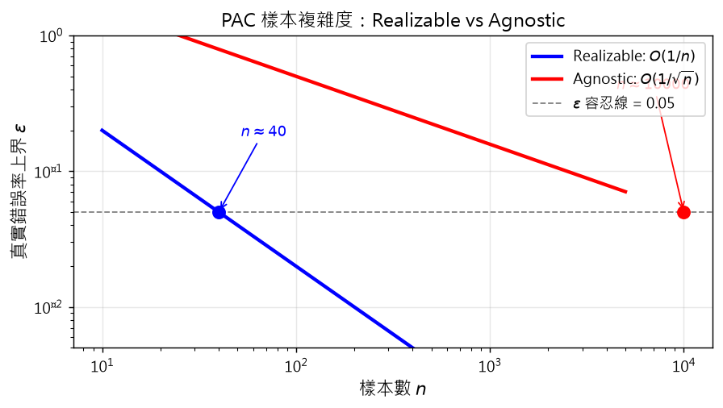
示意圖解：請對照 B0 準則（遮住文字仍能看出因果/反直覺）。
🤖 AI 生圖可用：重繪此示意圖的提示詞（結構化）
WHAT: 兩條曲線在同一張 log-log 座標上，藍色 realizable (∝1/n) 與紅色 agnostic (∝1/√n) 從左上往右下；水平虛線是 ε=0.05 容忍線；兩條曲線各自有一個圓點標示抵達容忍線的 n 值，並有箭頭與標籤寫 n≈40 與 n≈10000（讓讀者一眼看出 250 倍差距）。
WHY: 必須讓讀者瞬間看懂「agnostic 比 realizable 多吃 1/ε 倍樣本」這個差距。
MUST show: (1) 兩條對比曲線，顏色區分；(2) 同一條 ε 容忍線；(3) 兩個交叉點與對應 n 標籤；(4) log-log 軸。
AVOID: 條形圖、隨機散點、沒有標註的純曲線。
STYLE: clean scientific plot, white background, 標題「PAC 樣本複雜度：Realizable vs Agnostic」。
互動 demo：Realizable vs Agnostic：兩條 ε 曲線
Realizable: $\varepsilon \le 2/n$（假設 $\mathcal{H}$ 內有真函數）。Agnostic: $\varepsilon \le C/\sqrt{n}$（沒有 realizable 假設）。
怎麼操作：拉動樣本數 $n$ 滑桿，觀察兩條曲線抵達 $\varepsilon=0.05$ 所需的差距。
觀察什麼：差距隨 $n$ 增大而拉大——agnostic 比 realizable 多吃 $\sim\sqrt{n}$ 倍樣本。
正確基準：在 $n=40$ 附近 realizable 抵達 $\varepsilon\approx0.05$，agnostic 還在 0.79；拉到 $n=10000$ 時 realizable 0.0002、agnostic 0.05。
500
Realizable 假設：存在某個目標函數 $f\in\mathcal{H}$，使得資料標籤就是 $y=f(x)$（沒有雜訊）。這是 PAC 框架最乾淨的設定。
在此設定下，定義假設 $h$ 在分佈 $\mathcal{D}$ 上的真實錯誤率：
$$\mathrm{err}_{\mathcal{D}}(h) := \mathbb{P}_{x\sim\mathcal{D}}[h(x) \neq f(x)]$$
定義 1（Realizable PAC）：若存在演算法 $\mathcal{A}$，對任意 $\epsilon,\delta\in(0,1)$、任意分佈 $\mathcal{D}$，當樣本數 $n\ge n_{\mathcal{H}}(\epsilon,\delta)$ 時，$\mathcal{A}$ 以至少 $1-\delta$ 機率輸出 $h\in\mathcal{H}$ 使 $\mathrm{err}_{\mathcal{D}}(h)\le\epsilon$，則 $\mathcal{H}$ 是 PAC-learnable。
直覺：因為資料「可被某個 $\mathcal{H}$ 內的函數完美解釋」，只要樣本夠多，經驗風險最小化（ERM） 自然能挑到一個錯誤率小於 $\epsilon$ 的假設。
Realizable 的限制：現實資料幾乎一定有雜訊——同一張 $x$ 可能對應不同 $y$（標註者主觀、感測器誤差、隱藏變數）。這時 realizable 假設不成立，要用下節的 agnostic 設定。
2.2
Agnostic PAC：放棄「完美函數存在」
放棄 realizable 假設——也就是承認「$\mathcal{H}$ 裡可能根本沒有能完美解釋資料的函數」。這時學習的目標變成：找到 $\mathcal{H}$ 內最好的那個假設，至多好 $\epsilon$。
定義 2（Agnostic PAC）：若 $\mathcal{A}$ 以至少 $1-\delta$ 機率輸出 $h\in\mathcal{H}$ 使
$$\mathrm{err}_{\mathcal{D}}(h) \le \inf_{h'\in\mathcal{H}}\mathrm{err}_{\mathcal{D}}(h') + \epsilon,$$
則 $\mathcal{H}$ 是 agnostic PAC-learnable。
注意右側多出的 $\inf_{h'\in\mathcal{H}}\mathrm{err}_{\mathcal{D}}(h')$：這是 $\mathcal{H}$ 內最好假設的錯誤率（bayes risk 的 $\mathcal{H}$ 內版本）。agnostic 給的保證是「我學到的跟 $\mathcal{H}$ 內最好的差不多」，而不是「我學到一個好模型」——這個差別在深度學習裡至關重要，因為 $\mathcal{H}$ 通常根本沒有能完美解釋資料的函數。
原文用股票做類比：realizable 像「保證一年後報酬最高」（假設資訊完美）；agnostic 像「保證跟市場上最好的投資人不會差太多」（現實有戰爭、災變等不可控因素）。
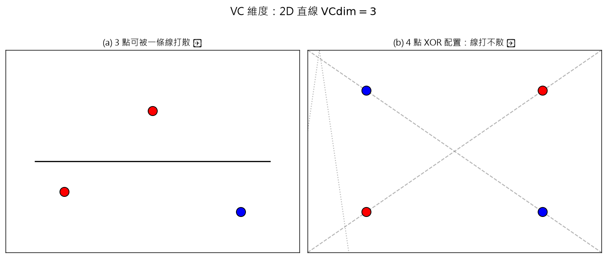
示意圖解：請對照 B0 準則（遮住文字仍能看出因果/反直覺）。
🤖 AI 生圖可用：重繪此示意圖的提示詞（結構化）
WHAT: 左右兩子圖。左圖：3 個點（一紅二藍）排成不等距三角形，畫一條水平黑線完美分開紅藍；右圖：4 個點排成 2×2 對角同色（XOR 配置），多條灰色虛線（X 形 + 兩條斜線）嘗試但顯然都無法分開。
WHY: 凸顯「2D 直線只能 shatter 3 點不能 shatter 4 點」這個 VC 維度核心定義。
MUST show: (1) 左 3 點 1 條線 OK；(2) 右 4 點 XOR 形狀；(3) 右圖至少 3 條嘗試的線都失敗。
AVOID: 數學公式、表格；用 3D 圖；只畫一張圖。
STYLE: clean educational diagram, 黑白 + 紅藍標記，標題「VC 維度：2D 直線 VCdim=3」。
互動 demo：2D 線打散 3 / 打不散 4（VC = 3）
2D 平面上，直線假設類 $\mathcal{H}=\{$所有直線$\}$ 的 $\mathrm{VCdim}(\mathcal{H})=3$。任何 3 點都可被某直線完美打散；存在 4 點（如 XOR 配置）打不散。
怎麼操作：切換 3 點 / 4 點模式觀察。
觀察什麼：3 點：總能找到一條線分開紅藍（shatter 成功）。4 點 XOR 配色：任何一條線都會至少錯一個（shatter 失敗）。
正確基準：左圖 3 點 1 條綠線 = shatter ✓；右圖 4 點 XOR，灰色虛線嘗試都失敗 = ✗。
打散（shattering）：給定一個假設類 $\mathcal{H}$ 與一組 $n$ 個資料點，$\mathcal{H}$ 能打散這組點若且唯若所有 $2^n$ 種標籤組合都存在某個 $h\in\mathcal{H}$ 能正確分類。
VC 維度 = $\mathcal{H}$ 能打散的最大點數，記為 $\mathrm{VCdim}(\mathcal{H})$。
經典例子：2D 平面上的直線 $\mathrm{VCdim}=3$——任何 3 點都可被某直線打散（如原文 Fig.1a/b/c），但 4 點不行（如 Fig.1d 的對角配置）。
定理 1（統計學習基本定理）：$\mathcal{H}$ 是 PAC-learnable 若且唯若 $\mathrm{VCdim}(\mathcal{H})$ 有限。
為什麼？因為有限 VC 維度才能保證「假設類不會太強到記住任何雜訊」。深度學習的 $\mathrm{VCdim}$ 是多少？依 Harvey-Liaw-Mehrabian (2017) 與 Bartlett 等人 (2019) 的近緊界：對 $w$ 個參數、$l$ 層的 ReLU 網路，
$$\Omega(wl\log(w/l)) \le \mathrm{VCdim} \le \mathcal{O}(wl\log w).$$
實務上若深度 $l\ll w$，可簡化為 $\mathrm{VCdim}=\Theta(w\log w)$——VC 維度隨參數量近似線性增長。GPT-3 級模型有 1750 億參數，VC 維度約 $\sim 10^{11}$，比整個訓練集都還大——這就是 §3.3 要面對的問題。
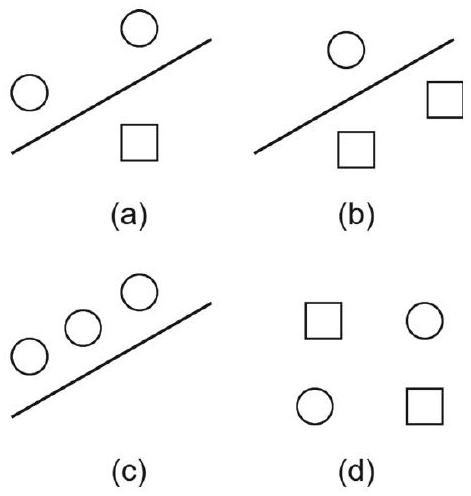
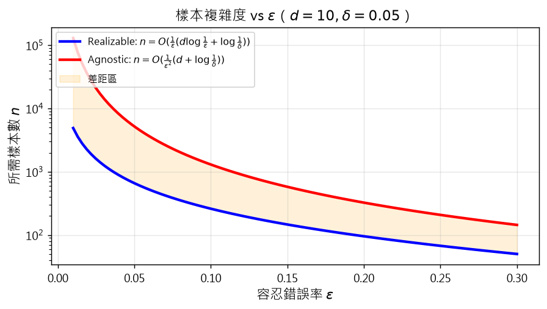
示意圖解：請對照 B0 準則（遮住文字仍能看出因果/反直覺）。
🤖 AI 生圖可用：重繪此示意圖的提示詞（結構化）
WHAT: x 軸是 ε（0.01–0.3），y 軸是 n（log scale），兩條曲線 realizable 藍色（淺）與 agnostic 紅色（陡），中間填半透明橘色標「差距區」。
WHY: 凸顯「容忍錯誤率要求越嚴，所需樣本指數爆炸」。
MUST show: (1) 兩條曲線，agnostic 比 realizable 陡得多；(2) 中間差距區；(3) 標註 d=10, δ=0.05 的條件。
AVOID: 對數軸改用線性；單一條曲線；沒有差距區填色。
STYLE: clean scientific plot, 標題「樣本複雜度 vs ε」。
互動 demo：樣本複雜度 $n(\epsilon)$ 曲線
$n_{\mathrm{realizable}}(\epsilon) = O((d\log(1/\epsilon)+\log(1/\delta))/\epsilon)$；$n_{\mathrm{agnostic}} = O((d+\log(1/\delta))/\epsilon^2)$
怎麼操作：拖動 $\epsilon$ 與 $d$ 觀察兩條曲線。
觀察什麼：Agnostic 曲線在 $\epsilon$ 變小時急劇上升——這是「錯誤率要求越嚴，所需樣本指數爆炸」的視覺。
正確基準：預設 $d=10, \delta=0.05$：$\epsilon=0.05$ 時 realizable $n\approx300$，agnostic $n\approx4300$（約 14× 差距）。
定義 樣本複雜度函數 $n_{\mathcal{H}}(\epsilon,\delta)$：滿足 PAC 條件所需的最小樣本數。定理 2 給了兩個最重要的具體公式：
Realizable 情形：
$$n_{\mathcal{H}} = \mathcal{O}\!\left(\frac{1}{\epsilon}\left(d\log\frac{1}{\epsilon}+\log\frac{1}{\delta}\right)\right).$$
Agnostic 情形：
$$n_{\mathcal{H}} = \mathcal{O}\!\left(\frac{1}{\epsilon^{2}}\left(d+\log\frac{1}{\delta}\right)\right).$$
其中 $d=\mathrm{VCdim}(\mathcal{H})$。幾個值得記住的指數關係：
- 對 $\epsilon$ 的依賴：realizable 是 $1/\epsilon$，agnostic 是 $1/\epsilon^2$——agnostic 對「想要更小的錯誤率」反應更敏感，因為容忍了更多不確定性。
- 對 $d$ 的依賴：兩者都是 $d$ 線性——VC 維度是「學習難度」的代理變數。
- 對 $\delta$ 的依賴：都只有 $\log(1/\delta)$——把信心從 95% 提到 99% 只需多一點點樣本。
把數字塞進去：$d=10^6$（百萬參數）、$\epsilon=0.01$、$\delta=0.05$，agnostic 給的 $n\sim 10^6\times 10^4 + 3 = 10^{10}$——比現實常見資料集大好幾個量級。這就是所謂「上界是空的（vacuous）」。
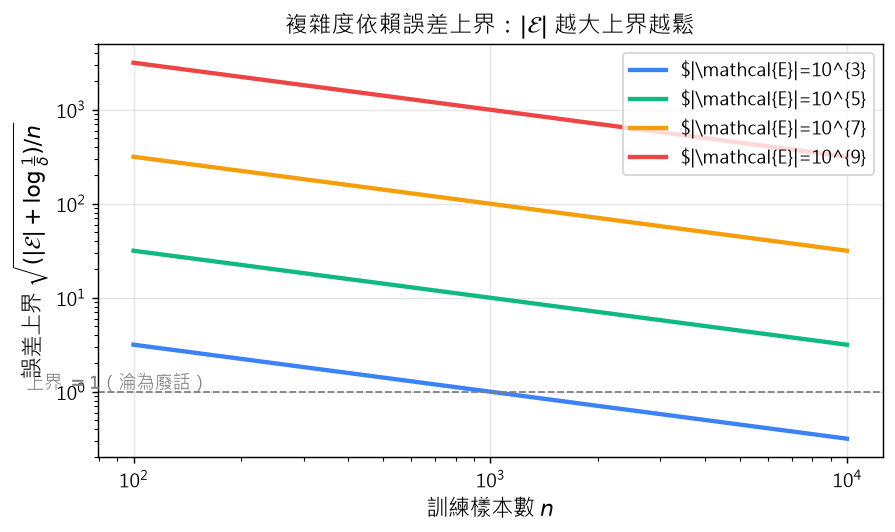
示意圖解：請對照 B0 準則（遮住文字仍能看出因果/反直覺）。
🤖 AI 生圖可用：重繪此示意圖的提示詞（結構化）
WHAT: x 軸是 n（log 100–10000），y 軸是上界（log scale），4 條不同顏色的曲線對應 |𝓔|=10³, 10⁵, 10⁷, 10⁹；水平虛線在 y=1 處標「淪為廢話」；右側圖例。
WHY: 凸顯「參數量遠大於資料時上界退化為 1」這個定理 3 的關鍵推論。
MUST show: (1) 4 條曲線隨 |𝓔| 變大而整體上移；(2) 水平虛線 y=1；(3) log-log 軸；(4) 圖例清楚標示每條線的 |𝓔|。
AVOID: 沒有 log 軸、沒有 1 基準線、單一條曲線。
STYLE: clean scientific plot, 標題「複雜度依賴誤差上界」。
互動 demo：複雜度上界：參數量與資料量的拔河
$\mathrm{err}_{\mathcal{D}}(h) \le \inf\mathrm{err} + \sqrt{(|\mathcal{E}|+\log(1/\delta))/n}$
怎麼操作：拖動 $|\mathcal{E}|$（log scale）與 $n$ 觀察上界變化。
觀察什麼：當 $|\mathcal{E}|$ 遠大於 $n$ 時上界膨脹甚至 $\ge 1$——理論失效。
正確基準：$|\mathcal{E}|=10^6, n=10^3$ 時上界 $\approx 31.6$；$|\mathcal{E}|=10^3, n=10^6$ 時 $\approx 0.002$。
把 §2.4 的樣本複雜度結論改寫成「已知訓練資料 $n$ 時，測試誤差被什麼限制」——這是更常用的形式。定理 3 給出：
$$\mathrm{err}_{\mathcal{D}}(h) \le \inf_{h'\in\mathcal{H}}\mathrm{err}_{\mathcal{D}}(h') + f(c(h), n),$$
其中 $c(h)$ 是某個複雜度度量（VC 維度就是一種），$f$ 是隨 $c$ 遞增、隨 $n$ 遞減的函數。具體到神經網路（定理 5 在 §3.2），$f$ 就是 $\sqrt{(|\mathcal{E}|+\log(1/\delta))/n}$，其中 $|\mathcal{E}|$ 是權重總數。
這個上界告訴你什麼？
- 模型越複雜（$c$ 大），上界越鬆——經典的「bias-variance 取捨」。
- 資料越多（$n$ 大），上界越緊——「多看資料永遠有用」。
- 若 $|\mathcal{E}| \gg n$，$f$ 接近 1，上界淪為「$\mathrm{err}_{\mathcal{D}}(h) \le 1$」這種廢話。
這也是後面 §3.3「為什麼上界在神經網路不 work」的鋪墊：實務上 $|\mathcal{E}|\gg n$ 的神經網路比比皆是（GPT-3 級模型參數量遠超訓練 token 數），但它們泛化得莫名其妙地好——這違反了上界的字面意義。
示意圖解（inline SVG）。
定理 4（神經網路表達力）：設 $d$ 為資料維度，$s(d)$ 為 $d$ 的指數函數。則存在一個有 $s(d)$ 個神經元的前饋網路，可逼近任意函數
$$f:[0,1]^d \to [0,1],$$
誤差至多 $\epsilon\gtrsim 0$。
這就是有名的通用逼近定理（Universal Approximation Theorem）。它只保證「存在夠大的網路能逼近」，但沒說：
- 這個網路要多大？實務上指數級 $s(d)$ 對 $d$ 大的問題是天文數字。
- 訓練演算法找不找得到？這是優化問題，不是表達力問題。
- 找到的網路泛化嗎？這是 §3.2–§3.3 的主題。
深度帶來的好處：定理 4 還有個常被忽略的版本——對於某些函數族，深度網路所需的參數量是淺層網路的指數分之一。例如 parity 函數、層疊的 XOR-like 結構。深度不只是「多幾層的非線性疊加」，而是用指數效率表達某些函數族。
把定理 3 套到神經網路——用「權重數 $|\mathcal{E}|$」當複雜度度量 $c(h)$：
$$\mathrm{err}_{\mathcal{D}}(h) \le \inf_{h'\in\mathcal{H}}\mathrm{err}_{\mathcal{D}}(h') + \sqrt{\frac{|\mathcal{E}|+\log(1/\delta)}{n}}.$$
這個上界的三個直接推論：
- 網路越大、泛化越差？ 表面上看是的——$|\mathcal{E}|$ 變大會讓根號項變大、上界變鬆。
- 資料越多、泛化越好——$n$ 變大會讓根號項變小、上界變緊。
- 「$n\gg|\mathcal{E}|$」是必要條件：若 $n\approx|\mathcal{E}|$，根號項 $\approx 1$，上界等於「$\mathrm{err}\le 1$」這種空話。
「直覺」告訴你：模型參數量 $\gg$ 訓練樣本數時一定會過擬合。但 §3.3 馬上會打臉：實務上 $|\mathcal{E}|\gg n$ 的神經網路泛化得很好。這個矛盾就是現代深度學習理論的核心謎題。
直觀解釋（先劇透）：$|\mathcal{E}|$ 是「最壞情況的容量」，但 SGD 找到的解其實落在參數空間的某個小子集合，這個子集的「有效容量」可能遠小於 $|\mathcal{E}|$（見 §5.4 implicit bias）。
互動 demo：NN 複雜度上界：$|\mathcal{E}|$ 與 $n$ 拉鋸
神經網路的定理 3：$\mathrm{err} \le \inf\mathrm{err} + \sqrt{(|\mathcal{E}|+\log(1/\delta))/n}$
怎麼操作：拖動 $|\mathcal{E}|$ 與 $n$ 觀察上界水平線（紫）vs 廢話線（紅 $y=1$）的相對位置。
觀察什麼：$|\mathcal{E}| \gg n$ 時紫線撞上紅線，上界失效。
正確基準：$|\mathcal{E}|=10^6, n=10^3$ 時紫線遠在紅線上方（$1.0$ 上界）。$|\mathcal{E}|=10^3, n=10^6$ 時紫線在底部。
示意圖解（inline SVG）。
一句話：理論上界給的是「對所有可學習的假設都成立」的最壞情況保證，但神經網路實際上依賴某些結構假設（如資料的低維流形、標籤的某些可學規律），這些假設讓最壞情況不會發生。
本章用三個方向的證據展示這個落差：
- §3.3.1 隨機標籤實驗（Zhang et al., 2017）：把 CIFAR-10 的標籤完全隨機打散，神經網路仍然能完美擬合訓練資料。也就是說，網路容量足夠記住任何函數。如果只考慮 VC 維度，這種網路早該爆掉，但它對「真實」測試資料仍表現正常——「能記住」不等於「會記住」，關鍵在於訓練演算法（SGD）有偏置。
- §3.3.2 Uniform convergence 的不足（Nagarajan & Kolter, 2019）：uniform convergence 框架要求「訓練誤差收斂到測試誤差」，但實驗顯示 uniform convergence bound 可能隨 $n$ 增加而變鬆（即使測試誤差下降）——bound 與真實泛化根本脫鉤。
這兩個方向都指出：要解釋深度學習的泛化，必須引入超出「模型容量」的東西——資料結構、SGD 動力學、模型架構的歸納偏置……後面 §4（資訊瓶頸）與 §5（六大新現象）就是這些嘗試。
3.3.1
隨機標籤實驗：NN 為何能記住一切？
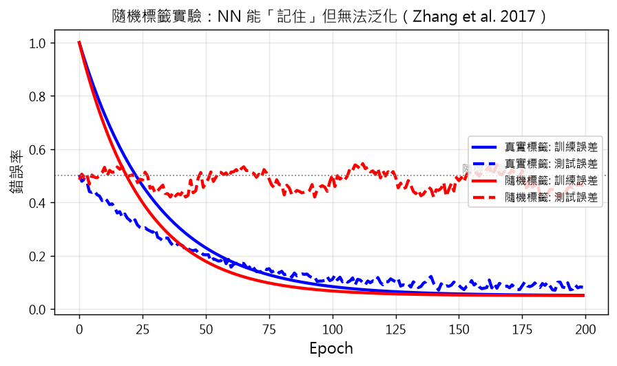
示意圖解：請對照 B0 準則（遮住文字仍能看出因果/反直覺）。
🤖 AI 生圖可用：重繪此示意圖的提示詞（結構化）
WHAT: x 軸是 epoch（0–200），4 條線：藍實線 真實標籤 train、藍虛線 真實標籤 test、紅實線 隨機標籤 train、紅虛線 隨機標籤 test；水平灰虛線在 0.5 標「隨機猜測」。
WHY: 凸顯「隨機標籤時訓練誤差仍能 0，但測試掉到 50%」——NN 有容量記住一切，但泛化靠結構。
MUST show: (1) 紅實線也能降到 0；(2) 紅虛線停在 0.5 附近；(3) 0.5 水平線。
AVOID: 線性軸（用線性就好）、雙 y 軸、3D。
STYLE: clean scientific plot, 標題「隨機標籤實驗 (Zhang et al. 2017)」。
互動 demo：隨機標籤實驗：能記住 ≠ 會記住
Zhang et al. (2017)：訓練資料標籤完全隨機化，CNN 仍能將訓練誤差降到 0，但測試誤差停在隨機水準。
怎麼操作：切換 真實 / 隨機 標籤模式觀察曲線差異。
觀察什麼：真實標籤：兩條曲線都下降（泛化）。隨機標籤：訓練誤差降到 0 但測試卡在 0.5（沒泛化）。
正確基準：預設顯示：真實模式 test $\approx 0.08$；隨機模式 test 卡在 0.5。
Zhang et al. (2017) 做了兩個乾淨的實驗：
- 隨機標籤實驗：把 ImageNet/CIFAR 的標籤完全打亂（圖還是原圖，標籤是均勻隨機），用標準 CNN 訓練。訓練誤差能降到 0——網路有足夠容量把隨機標籤也記下來。測試誤差當然接近亂猜（因為測試標籤也是隨機的）。
- 隨機像素實驗：標籤用真實的，但把輸入像素完全打亂成高斯雜訊。同樣能訓練誤差 0、測試誤差近亂猜。
這兩個實驗的意義：
- 「能記住」≠「會記住」。同樣的網路結構，在真實資料上會學到可泛化解，在隨機資料上只能死記。可見泛化不是「模型容量不夠」造成的——而是訓練演算法（SGD）配合資料結構的結果。
- 正則化不是答案。即使加 weight decay、dropout 等顯式正則化，隨機標籤實驗的訓練誤差仍能降到 0。換言之，正則化無法完全解釋泛化——還有別的機制在運作。
後續工作（如 [Poggio et al., 2018]）把這種「額外的泛化來源」歸因於loss landscape 的幾何 與優化過程的隱式正則化——也就是 §5.4 implicit bias。
3.3.2
Uniform convergence 的不足
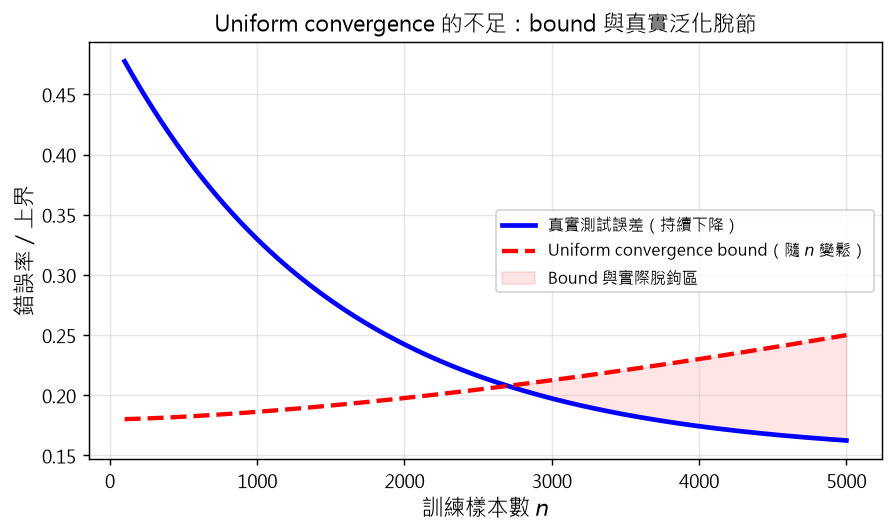
示意圖解：請對照 B0 準則（遮住文字仍能看出因果/反直覺）。
🤖 AI 生圖可用：重繪此示意圖的提示詞（結構化）
WHAT: x 軸是 n（log 100–5000），藍實線 真實測試誤差持續下降、紅虛線 uniform convergence bound 隨 n 變鬆（從低升到高）；中間紅色半透明填色「Bound 與實際脫鉤區」。
WHY: 凸顯 Nagarajan & Kolter (2019) 的反直覺：bound 與真實泛化可以完全脫鉤。
MUST show: (1) 兩條方向相反的曲線；(2) 紅色填色區；(3) 圖例。
AVOID: 兩條曲線方向相同、沒有填色區。
STYLE: clean scientific plot, 標題「Uniform convergence 的不足」。
互動 demo：Uniform convergence bound 隨 $n$ 變鬆
Nagarajan & Kolter (2019)：在線性 NN 上，uniform convergence bound 可能隨 $n$ 增加而變鬆，與真實測試誤差方向相反。
怎麼操作：拖動 $n$ 觀察兩個圓點位置。
觀察什麼：藍點（真實測試誤差）隨 $n$ 下降；紅點（bound）隨 $n$ 上升——bound 與真實泛化脫鉤。
正確基準：$n=5000$ 時 test $\approx 0.16$，bound $\approx 0.66$，差距 0.5。
Uniform convergence（均勻收斂）框架：要求「所有假設的訓練誤差都收斂到測試誤差」。如果成立，那 ERM 挑出的最佳假設自然也泛化。
Nagarajan & Kolter (2019) 用實驗展示這個框架在神經網路上的失敗：
- 他們建構了一個單層線性網路，模型很小、很穩定。
- 訓練過程中，測試誤差持續下降（模型確實在學）。
- 但 uniform convergence bound 卻隨 $n$ 增加而變鬆——bound 與真實泛化脫鉤。
換言之，「訓練誤差能收斂到測試誤差」這件事在神經網路上未必成立。即使它成立，bound 也可能鬆到沒用。
這告訴我們什麼？
- Uniform convergence 是泛化的充分條件，但不是必要條件。神經網路可能有泛化但沒有 uniform convergence。
- 要解釋深度學習泛化，需要超出 uniform convergence 的新框架。資訊瓶頸（§4）就是一種嘗試，§5 介紹的六大現象是另一種「現象學」視角。
示意圖解（inline SVG）。
資訊瓶頸（Information Bottleneck, IB）：Tishby 等人 (2000) 提出的資訊論框架。核心想法：
- 給定輸入 $X$ 與標籤 $Y$。
- 學習一個壓縮表示 $\tilde X$，使得 $\tilde X$ 對 $X$ 的資訊盡可能少（壓縮），但對 $Y$ 的資訊盡可能多（預測有用）。
形式化為優化問題：
$$\min_{P(\tilde x|x)} I(X;\tilde X) - \beta I(\tilde X;Y),$$
其中 $I(\cdot;\cdot)$ 是互資訊，$\beta>0$ 控制「壓縮」與「任務相關」的取捨。
把神經網路當 IB： Tishby & Zaslavsky (2015) 提出，把隱藏層的輸出視為 $\tilde X$——隱藏層就是「資訊瓶頸」，資料通過隱藏層被壓縮、但保留對預測有用的部分。Fig.2a/b/c 展示了三個版本：抽象的瓶頸、autoencoder 的 code 層、一般多層網路。
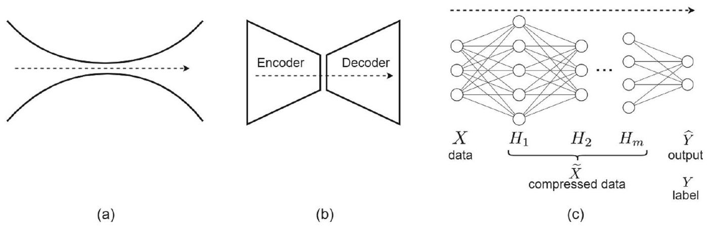
優化極限：$\beta=0$ 時完全忽略 $Y$、把 $X$ 壓到最小（可能只剩一個神經元）；$\beta\to\infty$ 時忽略壓縮、保留所有 $Y$ 相關資訊（接近 hard clustering）。
與 PAC 的差別：PAC 用樣本數量界；IB 用資訊量界。直覺上，若表示 $\tilde X$ 與 $Y$ 的互資訊越大、與 $X$ 的互資訊越小，泛化應越好——這是 §4.2 要形式化的命題。
4.1.1
Rate-distortion 最佳化
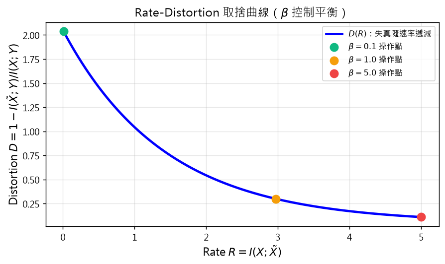
示意圖解：請對照 B0 準則（遮住文字仍能看出因果/反直覺）。
🤖 AI 生圖可用：重繪此示意圖的提示詞（結構化）
WHAT: 標準 rate-distortion 曲線：x 軸 rate R（0–5），y 軸 distortion D（從 2 衰減到 0.05）；3 個彩色圓點標示 β=0.1, 1.0, 5.0 的操作點（β 越大操作點越偏右下方）。
WHY: 凸顯「β 是壓縮率 vs 預測力的旋鈕」。
MUST show: (1) 單調遞減曲線；(2) 3 個不同 β 的操作點；(3) 圖例標 β 值。
AVOID: 多條曲線、3D 圖、對數軸。
STYLE: clean scientific plot, 標題「Rate-Distortion 取捨曲線」。
互動 demo：Rate-Distortion：$\beta$ 控制平衡
$\min I(X;\tilde X) - \beta I(\tilde X;Y)$：$\beta$ 大 → 重預測；$\beta$ 小 → 重壓縮。
怎麼操作：拖動 $\beta$ 觀察操作點（橘點）位置。
觀察什麼：$\beta$ 變大時操作點往右下移——容忍更多 rate 換更小 distortion。
正確基準：$\beta=0.1$ 操作點在左上（高 distortion、低 rate）；$\beta=5.0$ 操作點在右下（低 distortion、高 rate）。
IB 不是憑空冒出來的，它本質上是經典的 rate-distortion（速率-失真）最佳化在「保留 $Y$ 相關資訊」這個特殊失真度量下的特例。
Rate-distortion 的兩個旋鈕：
- Rate（速率） $I(X;\tilde X)$：表示 $\tilde X$ 還保留多少 $X$ 的資訊。Rate 越小 = 壓縮越狠。
- Distortion（失真） $I(\tilde X;Y)$：表示 $\tilde X$ 對預測 $Y$ 有多有用。失真越小（$I(\tilde X;Y)$ 越大）= 預測越準。
IB 的目標函數（重述）：
$$\min I(X;\tilde X) - \beta I(\tilde X;Y).$$
$\beta$ 越大，越重視預測準確度（容忍更多 rate）；$\beta$ 越小，越重視壓縮（容忍更多 distortion）。這是經典的「壓縮率 vs 預測力」取捨曲線。
為什麼這對神經網路重要？ Kawaguchi 等人 (2023) 沿這條思路證明：泛化差距可用「$X$ 與隱藏層的條件互資訊」來上界（見 §4.2 定理 6）。換言之，若隱藏層有效壓縮與 $Y$ 無關的資訊，泛化差距會小。這給了 IB 在深度學習中重新被關注的理論理由。
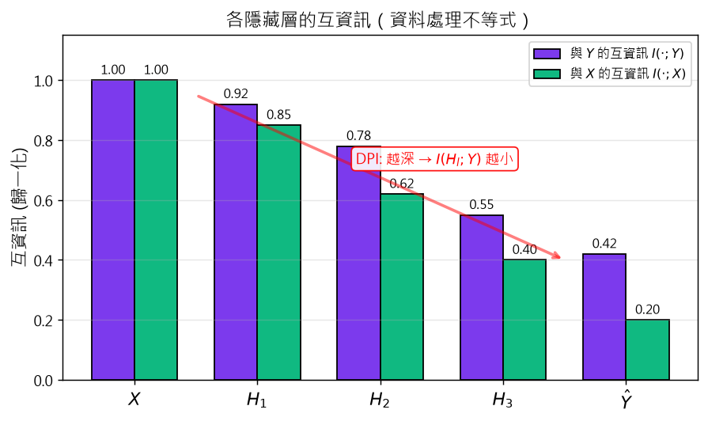
示意圖解：請對照 B0 準則（遮住文字仍能看出因果/反直覺）。
🤖 AI 生圖可用：重繪此示意圖的提示詞（結構化）
WHAT: x 軸 5 個類別（X, H₁, H₂, H₃, Ŷ），雙組長條圖：紫 = I(·;Y) 從 1.0 單調遞減到 0.42，綠 = I(·;X) 從 1.0 單調遞減到 0.20；紅色斜箭頭 + 文字「DPI: 越深 → 越小」。
WHY: 凸顯資料處理不等式「越深的隱藏層保留的標籤資訊越少」。
MUST show: (1) 5 個類別；(2) 兩組單調遞減的長條；(3) 數值標註；(4) 紅色箭頭與 DPI 標註。
AVOID: 折線圖、3D、沒有數值標註。
STYLE: clean scientific plot, 標題「各隱藏層的互資訊」。
互動 demo：各隱藏層的互資訊單調遞減（DPI）
資料處理不等式：$I(\hat Y;Y) \le I(H_i;Y) \le I(H_j;Y) \le I(X;Y)$，$i \ge j$
怎麼操作：拖動隱藏層數觀察曲線形狀。
觀察什麼：無論幾層，紫線（與 $Y$）與綠線（與 $X$）都從左到右單調遞減——DPI 的視覺證據。
正確基準：預設 3 隱藏層：$I(X;Y)=1.0$，$I(H_1;Y)\approx 0.85$，$I(H_3;Y)\approx 0.55$，$I(\hat Y;Y)=0.4$。
這節給出三組關鍵不等式，把「資訊如何在神經網路中流動」形式化。
不等式 1：壓縮必失資訊
$$I(\tilde X;Y) \le I(X;Y).$$
壓縮後的表示最多保留與原資料一樣多的標籤資訊——顯而易見。
不等式 2：各層資訊單調遞減（這是經典 資料處理不等式 DPI 的應用）
$$I(\hat Y;Y) \le I(H_i;Y) \le I(H_j;Y) \le I(X;Y), \quad i\ge j.$$
更深的隱藏層保留的標籤資訊不會比淺層多。這也是 Tishby 等人主張「訓練過程中深層的 $I(H_i;Y)$ 應先升後降（fitting phase → compression phase）」的依據。
不等式 3：有限樣本估計的有限樣本修正（Shamir-Sabato-Tishby 2010）
$$I(\tilde X;Y) \le \hat I(\tilde X;Y) + \mathcal{O}\!\left(\frac{|\tilde{\mathcal{X}}||\mathcal{Y}|}{\sqrt{n}}\right),$$
$$I(X;\tilde X) \le \hat I(X;\tilde X) + \mathcal{O}\!\left(\frac{|\tilde{\mathcal{X}}|}{\sqrt{n}}\right),$$
其中 $\hat I$ 是從 $n$ 筆樣本估出的實證互資訊。這告訴我們：壓縮越狠（$|\tilde{\mathcal{X}}|$ 越小），有限樣本估計越準。這是為什麼「模型自動學到緊緻表示」對泛化有益的一個量化理由。
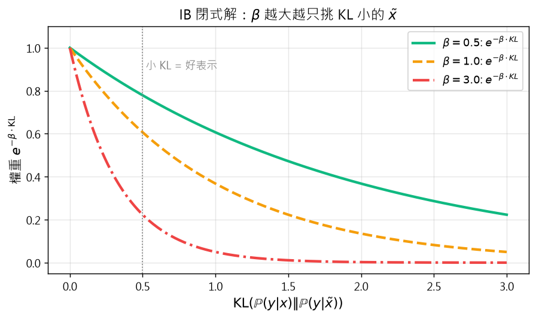
示意圖解：請對照 B0 準則（遮住文字仍能看出因果/反直覺）。
🤖 AI 生圖可用：重繪此示意圖的提示詞（結構化）
WHAT: x 軸 KL 散度（0–3），3 條曲線 β=0.5 綠、1.0 橘、3.0 紅 全部是 exp(-β·KL)；垂直灰虛線在 KL=0.5 標「小 KL = 好表示」。
WHY: 凸顯「IB 最佳化解把高 KL 的 x̃ 排除，β 越大排除越狠」。
MUST show: (1) 3 條 exp 衰減曲線；(2) β 越大越陡；(3) KL=0.5 標註線。
AVOID: 對數軸、3D、只有 1 條曲線。
STYLE: clean scientific plot, 標題「IB 閉式解」。
互動 demo：IB 閉式解：$\exp(-\beta\cdot\mathrm{KL})/Z$
$\mathbb{P}(\tilde x|x) \propto \exp(-\beta\cdot\mathrm{KL}(\mathbb{P}(y|x) \| \mathbb{P}(y|\tilde x)))$
怎麼操作：拖動 $\beta$ 觀察權重曲線形狀與配分函數 $Z$ 數值。
觀察什麼：$\beta$ 變大時曲線越尖，$Z$ 越小——表示越只挑 KL 小的 $\tilde x$。
正確基準：$\beta=0.5$ 時 $Z\approx 13$；$\beta=3.0$ 時 $Z\approx 0.06$。
把 IB 最佳化問題（式 12/13）對 $P(\tilde x|x)$ 做變分，可得一個非常乾淨的閉式解（Tishby et al., 2000 定理 5）：
$$\mathbb{P}(\tilde x|x) = \frac{\mathbb{P}(\tilde x)}{Z(x,\beta)} \exp\!\left(-\beta\,\mathrm{KL}\!\left(\mathbb{P}(y|x) \| \mathbb{P}(y|\tilde x)\right)\right),$$
其中 $Z(x,\beta)=\sum_{\tilde x}\mathbb{P}(\tilde x)\exp(-\beta\,\mathrm{KL}(\mathbb{P}(y|x) \| \mathbb{P}(y|\tilde x)))$ 是配分函數。
如何理解這個解？
- 「$x$ 編碼到 $\tilde x$ 的機率」正比於 $\exp(-\beta\,\mathrm{KL}(\mathbb{P}(y|x) \| \mathbb{P}(y|\tilde x)))$。$\mathrm{KL}$ 越小 = 知道 $\tilde x$ 後對 $y$ 的預測越接近知道 $x$ = 這個 $\tilde x$ 越能代表 $x$ 的標籤資訊。
- $\beta$ 控制「容忍度」：$\beta$ 大 → 只選 $\mathrm{KL}$ 極小的 $\tilde x$（強壓縮、保留資訊）；$\beta$ 小 → 容許較大的 $\mathrm{KL}$（弱壓縮）。
- 這是 soft clustering 版的 IB：每個 $x$ 依 KL 大小「軟式」分配到各 $\tilde x$，而非 hard cluster。
實務上直接算這個解需要知道 $\mathbb{P}(x,y)$ 與所有候選 $\tilde x$ 的聯合分佈，高維時不可行——這是 §4.3 要討論的 IB 批評之一。但作為「理想解」，它清楚展示了好的表示應如何平衡壓縮與預測。
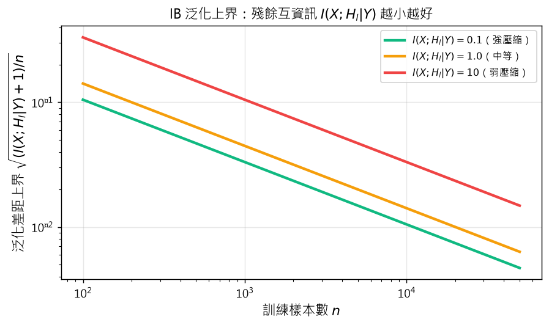
示意圖解：請對照 B0 準則（遮住文字仍能看出因果/反直覺）。
🤖 AI 生圖可用：重繪此示意圖的提示詞（結構化）
WHAT: x 軸 n（log 100–50000），y 軸 bound（log scale），3 條曲線 I(X;H_l|Y)=0.1 綠、1.0 橘、10 紅；圖例寫明每條對應的殘餘互資訊。
WHY: 凸顯「殘餘互資訊越小、泛化差距上界越緊」（Kawaguchi 2023 定理 6）。
MUST show: (1) 3 條 log-log 衰減曲線；(2) I 越小曲線越低；(3) 圖例清楚。
AVOID: 線性軸、單一條曲線、沒有圖例。
STYLE: clean scientific plot, 標題「IB 泛化上界」。
互動 demo：IB 泛化上界：殘餘互資訊越小越好
$\Delta \le \min_l \sqrt{(I(X;H_l|Y)+1)/n}$
怎麼操作：拖動 $I(X;H_l|Y)$ 與 $n$ 觀察上界。
觀察什麼：$I$ 越小上界越緊，$n$ 越大上界越緊。
正確基準：$I=0.1, n=10000$：bound $\approx 0.010$；$I=10, n=1000$：bound $\approx 0.105$。
承 §4.1.1 與 §4.1.2 的鋪墊，Kawaguchi 等人 (2023) 證明了把 IB 連到泛化的核心定理（定理 6）：
對於任何 $\delta>0$，以至少 $1-\delta$ 機率，
$$\lim_{n\to\infty} \mathcal{O}(\Delta(\mathcal{D})) \le \min_{l\in\{1,\ldots,L\}} \sqrt{\frac{I(X;H_l|Y)+1}{n}},$$
其中：
- $\Delta(\mathcal{D}) = \mathbb{E}[\ell(f(X),Y)] - \frac{1}{n}\sum_{i=1}^n \ell(f(x_i),y_i)$ 是泛化差距；
- $H_l$ 是第 $l$ 個隱藏層的輸出；
- $I(X;H_l|Y)$ 是 $X$ 與 $H_l$ 在給定 $Y$ 下殘餘的互資訊（$X$ 還保留多少 $Y$ 無關的資訊）。
這個上界的關鍵意涵：
- 若某個隱藏層 $H_l$ 對 $X$ 的條件互資訊（扣除 $Y$ 已知部分後）很小，泛化差距就小。
- 這給了「有效的表示 = 壓縮掉所有 $Y$ 無關資訊」一個嚴格的量化意義。
- 但這也帶來限制：$I(X;H_l|Y)$ 在高維下難以估計，這個 bound 在實務中同樣可能是 vacuous 的。
示意圖解（inline SVG）。
IB 是個漂亮的理論框架，但對它在深度學習的適用性有三個主要批評：
- 互資訊難以估計。$I(X;\tilde X)$ 在高維、連續空間下需要 $\mathbb{P}(x,\tilde x)$，這通常不可得。變分下界如 MINE、InfoNCE 可以逼近，但都有自己的假設與限制。換言之，IB 的「實驗可驗證性」受限。
- 深網未必進入壓縮階段。Tishby 等人主張訓練會經歷 fitting phase（$I(H_i;Y)$ 上升）→ compression phase（$I(X;H_i)$ 下降）。但 Saxe 等人 (2018) 與 Geiger (2020) 實驗顯示，許多網路沒有明顯的壓縮階段，$I(X;H_i)$ 在整個訓練過程中都不下降。
- 壓縮不是泛化的唯一來源。loss landscape 的幾何（平坦最小值）、SGD 的隨機性、模型架構的歸納偏置（CNN 的平移不變、RNN 的時序歸納）——這些都可能獨立地貢獻泛化，不一定要靠 IB 解釋。
結論：IB 是個有用的視角，但不是泛化的「完整解釋」。它應被視為「可能的（但非唯一的）」框架——這也是為什麼 §5 要介紹六個其他視角的原因。
5.1
Double descent：U 形曲線再下降
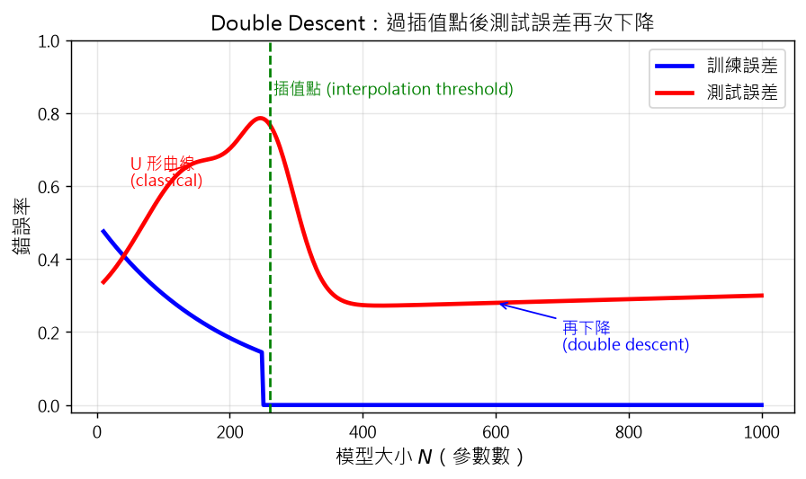
示意圖解：請對照 B0 準則（遮住文字仍能看出因果/反直覺）。
🤖 AI 生圖可用：重繪此示意圖的提示詞（結構化）
WHAT: x 軸模型大小 N（10–1000），藍實線 訓練誤差、紅實線 測試誤差；測試誤差先 U 形下降、中間插值點（綠虛線）附近凸起、後段再下降（double descent）；兩個標註箭頭「U 形」「再下降」。
WHY: 凸顯「過插值點後測試誤差再次下降」這個反直覺現象。
MUST show: (1) U 形 + 凸起 + 再下降的完整曲線；(2) 訓練誤差（單調下降）；(3) 插值點垂直線；(4) 兩個標註。
AVOID: 沒有插值點垂直線、沒有標註、U 形不完整。
STYLE: clean scientific plot, 標題「Double Descent」。
互動 demo：Double descent 曲線
模型大小 $N$ 從小到大時，測試誤差先 U 形下降、中間插值點凸起、再下降。
怎麼操作：拖動 $N$ 觀察當前點位置。
觀察什麼：$N$ 過插值點（綠虛線 $\approx 260$）後測試誤差再次下降——double descent 區。
正確基準：$N=500$：test $\approx 0.32$（U 形右側）；$N=800$：test $\approx 0.18$（再下降）。
經典 bias-variance tradeoff：模型太小 → underfit（測試誤差高），模型中等 → sweet spot（測試誤差低），模型太大 → overfit（測試誤差又升高）。畫出來是 U 形。
但 Belkin 等人 (2019) 與 Nakkiran 等人 (2021) 觀察到：若把模型大小繼續往上推、超過 interpolation threshold（模型能完美擬合訓練資料的最小大小）時，測試誤差再次下降。整條曲線不是 U 形，而是 U + 再下降——所以叫 double descent。
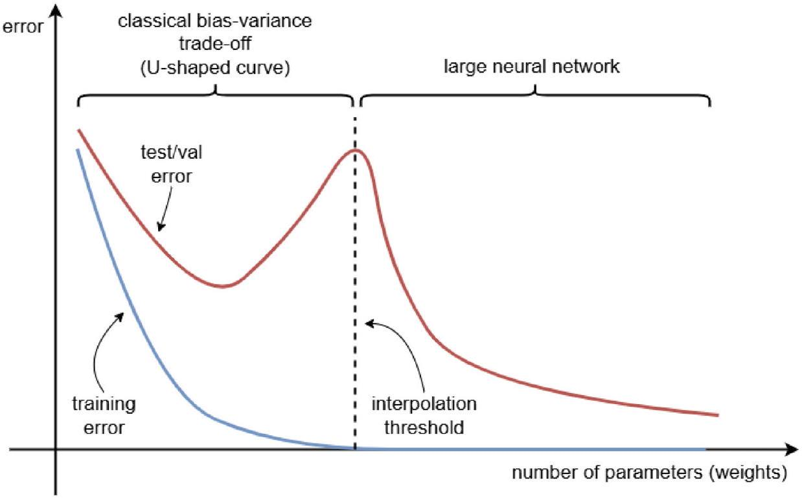
為什麼會這樣？ 直覺：在 interpolation threshold 附近，模型必須精細擬合每個訓練點（包括雜訊），沒有餘裕學規律；過了這個門檻，模型雖然大到能擬合任何東西，但梯度下降會找到更平滑、泛化更好的解（隱式正則化，見 §5.4）。
對實作者的啟示：不要因為「模型太大會過擬合」就在 sweet spot 之前停下來。在有充足資料/合適歸納偏置時，更大的模型可能反而泛化更好。這也是現代 LLM 一路把參數量推上去的核心動機之一。
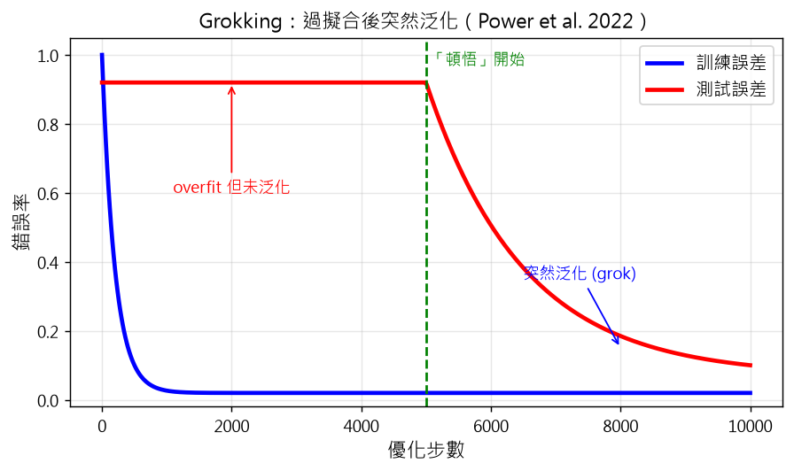
示意圖解：請對照 B0 準則（遮住文字仍能看出因果/反直覺）。
🤖 AI 生圖可用：重繪此示意圖的提示詞（結構化）
WHAT: x 軸優化步數（0–10000），藍實線 訓練誤差快速降、紅實線 測試誤差在 5000 步前卡在 0.92、5000 步後突然降到 0.05；綠色虛線在 5000 標「頓悟開始」；兩個標註箭頭「overfit 但未泛化」「突然泛化」。
WHY: 凸顯 Power et al. (2022) 的 grokking——過擬合後突然泛化的戲劇化轉折。
MUST show: (1) 訓練誤差快降；(2) 測試誤差長時間高、然後陡降；(3) 5000 步垂直線；(4) 兩個對比標註。
AVOID: 兩條曲線同方向、沒有「卡住再下降」階段。
STYLE: clean scientific plot, 標題「Grokking」。
互動 demo：Grokking：過擬合後突然泛化
Power et al. (2022)：訓練誤差快速 0、測試誤差長期卡住、繼續訓練後突然泛化。
怎麼操作：拖動優化步數觀察曲線。
觀察什麼：步數 < 5000：測試卡在 0.92（overfit）。步數 > 5000：測試突然下降（grok）。
正確基準：step=1000：test $\approx 0.92$；step=10000：test $\approx 0.13$。
Power et al. (2022) 發現一個戲劇化現象：在小型演算法資料集（如模算術）上，模型可能：
- 快速達到訓練誤差 0（過擬合、記住所有訓練樣本）。
- 測試誤差初期高（沒泛化）。
- 若繼續訓練很久很久，測試誤差突然從隨機水準掉到接近完美。
這個「過擬合後突然泛化」叫 grokking。它和 double descent 不同：double descent 是模型大小掃出來的曲線；grokking 是同一個模型在訓練時間上演的曲線。
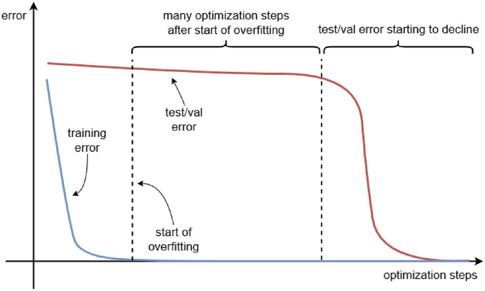
為什麼會 grok？ 主流假設是 SGD 的隱式正則化：剛開始 SGD 快速擬合資料（記住），但因為它偏好平坦最小值，長時間訓練後模型會慢慢「漂」到一個更結構化、更泛化解的區域。換言之，泛化不是訓練初期就到位，而是 SGD 慢慢逼出來的。
對實作者的啟示：在小型資料集上，若模型早期過擬合但測試仍有機會上來，可以考慮給它時間——learning rate 衰減策略、訓練長度可能比架構調整更關鍵。
示意圖解（inline SVG）。
Bartlett 等人 (2020, 2021) 提出並形式化一個反直覺現象：當資料有底層訊號 + 一些雜訊、且資料分佈有特定幾何結構（如高維下的特徵協方差結構）時，過參數化的模型可以同時：
- 完美擬合訓練資料（包括雜訊）；
- 在測試資料上仍表現良好。
這種「過擬合但無害」叫 benign overfitting。
為什麼「記住雜訊」不等於「測試會爆」？ 直覺：在高維空間，雜訊的方向有很多很多，模型把它們分散到很多參數去擬合；訊號的方向只有少數幾個，模型把大部分容量集中在訊號方向上。測試時，訊號方向上的權重主導預測，雜訊方向的權重互相抵消，所以泛化不受影響。
這個現象在線性回歸裡已經有嚴格證明（Bartlett-Long-Lugosi-Tsigler 2020 證明了在某些協方差結構下，插值（interpolating）解可以達到 bayes-optimal 風險的常數倍）。對神經網路也有部分理論結果（線性化分析等），但完整非線性版本仍是開放問題。
對實作者的啟示：在資料「訊號強於雜訊」、特徵有結構的情況下，不必為了避免過擬合而刻意縮小模型。讓它過擬合，測試也不一定崩。
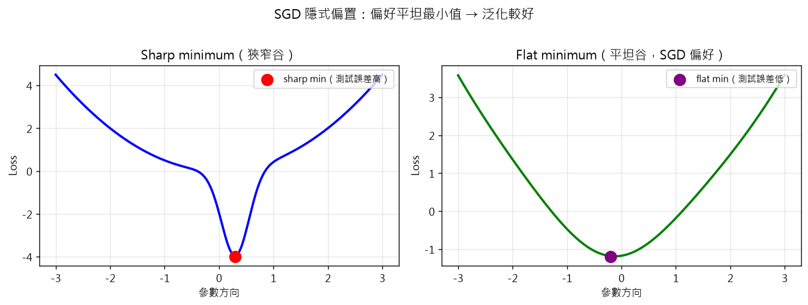
示意圖解：請對照 B0 準則（遮住文字仍能看出因果/反直覺）。
🤖 AI 生圖可用：重繪此示意圖的提示詞（結構化）
WHAT: 左右兩子圖。左圖：x 是參數方向，藍色 loss curve 有一個深而窄的谷（sharp minimum），紅點標示最低點；右圖：綠色 loss curve 有一個寬而淺的谷（flat minimum），紫點標示最低點。
WHY: 凸顯 SGD 偏好平坦最小值這件事的視覺差異。
MUST show: (1) 左右對比，一個 sharp 一個 flat；(2) 兩個最低點用不同顏色標；(3) 標題「Sharp」與「Flat」；(4) 整體標題「SGD 隱式偏置」。
AVOID: 兩個子圖長一樣、沒有谷、3D。
STYLE: clean scientific plot, 標題「SGD 隱式偏置：sharp vs flat minimum」。
很多深度學習的 loss 函數是欠定的——同一個訓練資料可能對應無限多組零訓練誤差的參數（特別是過參數化模型）。SGD 不會隨便挑一組；它有自己的隱式偏置（implicit bias），偏好某些解。
這個偏置從哪來？三個來源：
- Step size / 學習率：較大的學習率讓 SGD 難以收斂到狹窄的最小值（會被「彈出來」），所以偏好較寬的最小值。
- Mini-batch 雜訊：每次更新只用一小批樣本，引入隨機性；這個隨機性等同於對參數做某種隨機微分方程的「擴散」效應，也傾向平坦解。
- 初始化：不同的初始化讓 SGD 走向不同解，特別在小初始化時偏好「低秩/簡單」解。
為什麼「平坦最小值」與泛化有關？經驗上，平坦最小值（hessian 特徵值小）對應的測試誤差較低，狹窄最小值（hessian 特徵值大）對應的測試誤差較高。一個直觀解釋：平坦最小值附近的 loss landscape 較平緩，對訓練/測試資料的小擾動更不敏感。
SAM (Sharpness-Aware Minimization, Foret et al. 2021) 是把這個觀察做成演算法——它顯式尋找「附近所有點都 loss 低的參數」，等同於尋找平坦最小值，實驗上能提升泛化。
5.5
Neural Tangent Kernel
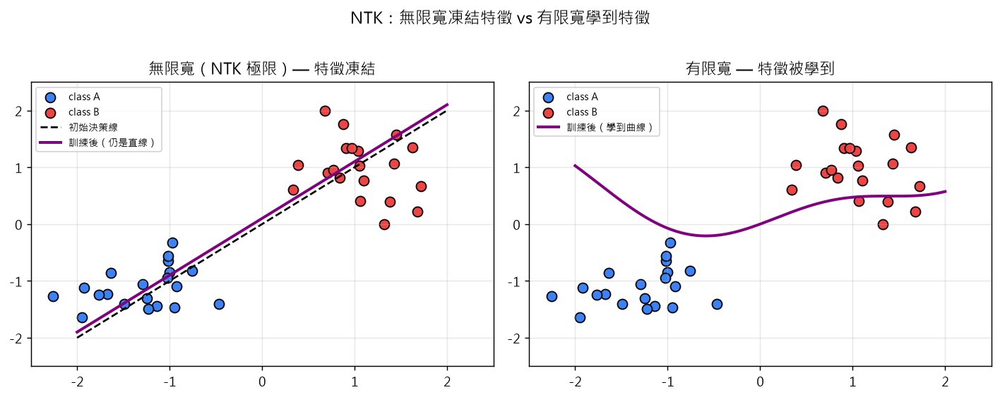
示意圖解：請對照 B0 準則（遮住文字仍能看出因果/反直覺）。
🤖 AI 生圖可用：重繪此示意圖的提示詞（結構化）
WHAT: 左右兩子圖，散點圖兩類 A 藍 B 紅各 20 點；左圖：初始決策線（黑色虛線）與訓練後決策線（紫色實線）幾乎重合仍是直線，標題「無限寬（NTK 極限）— 特徵凍結」；右圖：訓練後決策線變成曲線（紫色實線 y=0.3sin(2x)+0.2x²），標題「有限寬 — 特徵被學到」。
WHY: 凸顯 NTK 的核心區別：無限寬 → 線性行為（kernel method），有限寬 → 學到非線性特徵。
MUST show: (1) 兩類散點；(2) 左圖兩條線幾乎重合；(3) 右圖訓練後明顯變曲線；(4) 對比標題。
AVOID: 兩子圖相同、沒有訓練後曲線對比。
STYLE: clean scientific plot, 標題「NTK：無限寬 vs 有限寬」。
互動 demo：NTK：寬度小 → 學到曲線；寬度大 → 直線
無限寬 NTK 極限下，特徵凍結，決策曲線退化成直線（kernel-like）。有限寬能學到曲線特徵。
怎麼操作：拖動「寬度」滑桿觀察決策曲線形狀。
觀察什麼：寬度小 → 曲率大（學到非線性特徵）；寬度大 → 接近直線（NTK 凍結）。
正確基準：寬度=200 → 曲率 ≈ 0.9（明顯彎曲）；寬度=2000 → 曲率 ≈ 0（直線）。
Jacot et al. (2018) 與 Lee et al. (2019) 發現：在無限寬度極限下（即每層神經元數 $\to\infty$），用 gradient descent 訓練神經網路等價於用某個固定的 kernel 做kernel regression。這個 kernel 就是 Neural Tangent Kernel (NTK)，由網路架構與初始化決定、訓練過程中不變。
NTK 的兩個關鍵含義：
- 無限寬度 → 線性模型行為。雖然神經網路高度非線性，但在無限寬度下，訓練過程可以用 NTK 線性化——效果等同於在 NTK 定義的高維特徵空間做線性回歸。預測函式的訓練動態是閉式的、可分析的。
- 無限寬度 → 凍結特徵。在這個極限下，有效特徵在整個訓練過程中保持不變（凍結在初始化），只更新線性係數。這解釋了為什麼無限寬網路泛化行為像 kernel method、而有限寬網路能學到新特徵。
與通用逼近定理的互補：通用逼近說「夠寬的網路可表達任意函數」（表達力）；NTK 說「夠寬的網路訓練起來像 kernel method」（訓練動力學）。兩者一起給出無限寬極限的完整圖像。
對實作者的限制：實際模型不是無限寬。NTK 對有限寬仍提供近似，但「特徵學得到」這件事在有限寬才明顯。所以 NTK 更像「理解極限的解析工具」，而非「實務設計指南」。
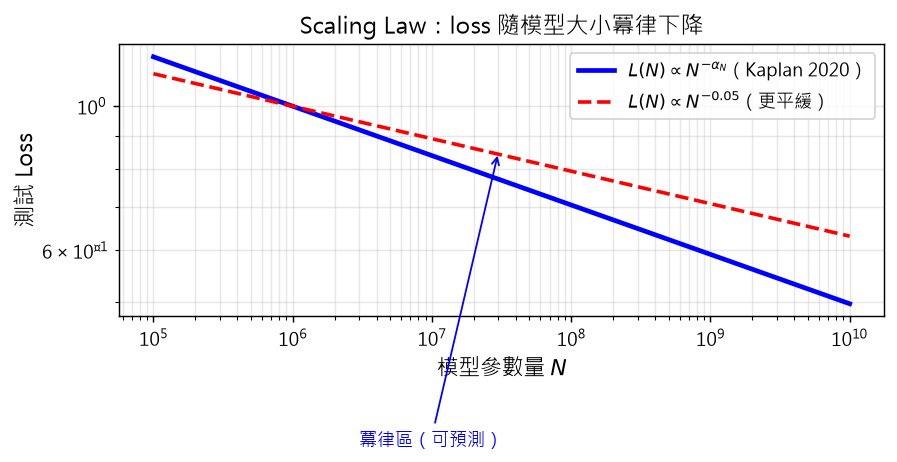
示意圖解：請對照 B0 準則（遮住文字仍能看出因果/反直覺）。
🤖 AI 生圖可用：重繪此示意圖的提示詞（結構化）
WHAT: x 軸模型參數量 N（log 10⁵–10¹⁰），y 軸測試 loss（log scale），兩條冪律直線：藍實線 L∝N^-0.076（Kaplan 2020 較陡）、紅虛線 L∝N^-0.05（Chinchilla 較平緩）；左側標註「冪律區（可預測）」。
WHY: 凸顯「模型越大 loss 越低、且遵循冪律」——這是 LLM 時代最重要的實務經驗法則。
MUST show: (1) 兩條 log-log 直線（冪律 → 直線）；(2) 兩種不同指數對比；(3) 冪律區標註。
AVOID: 對數軸改用線性、單一條曲線、3D。
STYLE: clean scientific plot, 標題「Scaling Law」。
這節合併兩個獨立的理論視角。
彩票假說（Lottery Ticket Hypothesis, Frankle & Carlin 2019）：大型過參數化網路通常包含較小的子網路（「中獎彩券」），若僅訓練這個子網路（用合適的初始化），可以達到與完整網路相當的效能。換言之，大網路之所以有效，是因為裡面藏了可以獨立成功的小網路。這給了 network pruning 的理論基礎，也暗示大網路的容量有大量「冗餘」——但冗餘不是壞事，因為它給了「找中獎彩券」的搜尋空間。
Scaling laws（Kaplan et al. 2020；Hoffmann et al. 2022）：模型效能（loss）隨模型大小、資料量、計算量呈冪律（power law）關係。例如，$L(N)\sim N^{-\alpha_N}$，其中 $N$ 是參數量，$\alpha_N$ 是某個固定指數。實務含義：
- 給定足夠資源，沿三個軸（N、資料、計算）放大 就能穩定提升效能。
- 偏離冪律 通常預示資料品質或架構問題。
- 可用於預測最佳資源分配（如 Chinchilla 論文發現：在固定計算下，模型大小與資料量應等比放大）。
兩者結合的觀點：彩票假說解釋了「為什麼大網路內能找到好子網路」；scaling laws 給了「要把資源放在哪」的量化指引。兩者都強調：現代深度學習的進展，很大程度來自「放大」與「剪枝」這一對張力。
示意圖解（inline SVG）。
本章把「為什麼神經網路能泛化」這個問題繞了一大圈。可以濃縮成三個對實作者有意義的結論：
- 古典 PAC/VC 給的上界是 vacuous 的。現代神經網路 $|\mathcal{E}|\gg n$ 是常態，§3.2 的上界因此是廢話。把它當真理是錯的，把它當完全無用也是錯的——它告訴你「需要新框架」這件事本身是對的。
- 用現象學而非單一理論指導實務。double descent、grokking、benign overfitting、implicit bias、NTK、lottery、scaling laws——這些不是一個統一理論的不同面相，而是各自解釋不同切片的「現象指南」。實作者用它們形成直覺（如「在訊號強於雜訊時放大模型」、「SGD 偏平坦最小值」），比死記某個 bound 更有用。
- 架構、資料、優化的歸納偏置比模型大小更關鍵。CNN 的平移不變、Transformer 的 attention、預訓練 + fine-tune 的遷移能力——這些結構性偏置往往比「再多 10 億參數」更能決定泛化。Scaling laws 的冪律只在「其他條件不變」時成立——改架構或資料 pipeline，常能跳出冪律獲得額外紅利。
用一句話總結：泛化不是靠「理論上界小」保證的，而是靠「資料結構 + 歸納偏置 + 優化動力學」共同決定的。
教授祕笈：全章地圖與三大張力
同學，我們打開整章前，先想一個場景：你在 2024 年用 GPT-4 寫論文，它對你問的問題答得很好。但你翻開 1990 年 Vapnik 的書，他會跟你說：「依 VC 維度，GPT 應該過擬合得亂七八糟才對。」為什麼書上說不可能，但實務上很行？
這是整章要回答的核心問題。今天的比喻我選「保齡球計分」。
保齡球有 10 格，每格 1 次機會丟兩球。理論（PAC/VC 維度）就像「完美球員」——他每球都精準丟中，10 格全倒。但你我都沒那麼準。我們是「普通球員」，可能第 1 格丟 7 支、第 2 格丟 4 支。我們能不能贏完美球員？通常不行，但奇蹟是：如果你能依分數調整策略（例如「哪一格丟什麼角度」），你的平均分會逼完美球員。這就是泛化。
整章的 5 條主軸就像 5 種「調整策略」：
- §2 PAC 與 VC：給你「完美球員打幾格才夠」的數學界。壞消息：界鬆到沒用。
- §3 神經網路：把上面的界套到 NN，壞消息更明顯：$|\mathcal{E}|\gg n$，上界 = 1（廢話）。
- §4 資訊瓶頸：換鏡頭——「好的表示 = 對輸入做最大壓縮、保留對標籤的資訊」。
- §5a Double descent / Grokking：實務上的兩個反直覺——「模型越大可能越好」「過擬合後突然頓悟」。
- §5b Benign overfit / NTK / Scaling：補完的「現象學指南」。
請你動筆算算看：
- 一個 $d=100$ 的假設類，$\delta=0.05$，目標 $\epsilon=0.05$，用 realizable 公式要多少樣本？
- 改成 agnostic 公式又要多少？
（提示：$n_{\text{real}} = O(\frac{1}{\epsilon}(d\log\frac{1}{\epsilon}+\log\frac{1}{\delta}))$，代入 $d=100, \epsilon=0.05, \delta=0.05$ 約 $4400$；agnostic 是 $O(\frac{1}{\epsilon^2}(d+\log\frac{1}{\delta}))$，約 $42000$。差距約 10 倍——這就是為什麼我們要關心「realizable vs agnostic」。）
常見誤解：
- 誤解 1：「VC 維度等於模型參數量」——錯，VC 維度是「能打散的最大點數」，是模型表達力的度量，但跟參數量不是簡單線性關係（其實是 $\Theta(w\log w)$）。
- 誤解 2：「現代 NN 泛化好，所以 PAC 理論錯了」——半對半錯。PAC 給的是「最壞情況保證」，對 NN 失效是因為「最壞情況不會發生」（資料有結構），不是理論錯。
- 誤解 3：「理解泛化只能選一個框架」——其實是 5 個框架各看一片光，沒有單一理論解釋一切。
口訣：PAC 給界、VC 量難、NN 失靈、IB 換鏡、現象補完。
教授祕笈：PAC 框架的兩顆旋鈕
同學，今天我們談 PAC。1984 年 Valiant 提出一個天才點子：把「學得起來」這件含糊事，拆成兩個可調整的旋鈕——$\epsilon$ 與 $\delta$。
我想用「面試三關」做比喻。你去面試一份工作，面試官有三關：
- 第一關（精度關）：你做的工作錯誤率要小於 $\epsilon$。$\epsilon$ 越小 = 老闆越挑剔。
- 第二關（信心關）：你至少有 $1-\delta$ 的機率通過第一關。$\delta$ 越小 = 老闆越沒耐心。
- 第三關（時間關）：你要在多項式時間內完成所有關。
PAC 框架說：給我足夠的訓練資料（$n\ge n_{\mathcal{H}}(\epsilon,\delta)$），前三關可同時通過。
兩個關鍵詞要分清：
- 真實錯誤率（true / generalization error）：在新資料上答錯的機率。我們想讓它小。
- 訓練錯誤率（empirical / training error）：在訓練資料上答錯的機率。我們直接量得到。
PAC 給的是「訓練錯誤率小，能保證真實錯誤率也小」這件事的樣本數公式。
請你動筆算算看：
-
假設 $\mathcal{H}$ 是 2D 線，VC 維度 = 3，$\delta=0.05$，目標 $\epsilon=0.1$。Realizable 公式給的 $n_{\mathcal{H}}$ 是多少？
（公式 $n = O(\frac{1}{\epsilon}(d\log\frac{1}{\epsilon}+\log\frac{1}{\delta}))$，代入 $d=3, \epsilon=0.1, \delta=0.05$ 約 $310$。）
-
為什麼是 $d\log(1/\epsilon)$ 而不只是 $d$？因為 $1/\epsilon$ 是「容忍精度的倒數」，越精的目標需要越多樣本；但 $\log$ 把指數爆炸壓回多項式。
常見誤解：
- 誤解 1：「PAC 是訓練演算法」——錯。PAC 是框架（family of statements），不是演算法。任何 ERM、SGD 都可以拿來用。
- 誤解 2：「$\delta=0$ 才算學會」——錯。$\delta=0.05$ = 接受 5% 失敗機率，這在實務上完全夠用。
- 誤解 3：「PAC 一定能學到完美模型」——錯。Realizable 是 $\text{err}\le\epsilon$，Agnostic 是 $\text{err}\le\inf+\epsilon$，兩者都不是「零錯誤」。
口訣：兩顆旋鈕 $\epsilon\delta$，多項式時間內可達；最壞情況保證，現代 NN 不夠用。
教授祕笈：Realizable PAC — 假設類裡有真神
Realizable PAC 是最乾淨的設定：存在某個 $f\in\mathcal{H}$，資料標籤剛好是 $y=f(x)$，沒有雜訊。這時學習變得「理論上簡單」：只要找到訓練誤差為 0 的假設，就幾乎一定泛化。
我用「找失物」做比喻。你把鑰匙掉在家裡某個房間。房間集合 = $\mathcal{H}$。每個房間你都找一次（= 評估每個 $h$）。如果有「真的房間」是鑰匙所在（= $f\in\mathcal{H}$），那只要你認真找完，保證能找到。
Realizable 的關鍵不等式（這個是整章的核心，記下來）：
$$\text{err}_\mathcal{D}(h) \le \epsilon \quad\text{機率}\ge 1-\delta \quad\Leftrightarrow\quad n \ge n_\mathcal{H}(\epsilon,\delta)$$
其中 $n_\mathcal{H}(\epsilon,\delta) = O\left(\frac{1}{\epsilon}\left(d\log\frac{1}{\epsilon}+\log\frac{1}{\delta}\right)\right)$，$d = \text{VCdim}(\mathcal{H})$。
為什麼是 $1/\epsilon$ 而不是 $1/\epsilon^2$？ 因為 realizable 沒有「資料雜訊」這條項——你只要找到訓練誤差 0 的假設，理論上就保證它泛化，不需要處理「可能找錯」的雜訊。
請你動筆算算看：
-
假設 $\mathcal{H}$ 是 $d$ 維線性分類器（VC 維度 = $d+1$），$\epsilon=0.05$, $\delta=0.05$。要多少樣本？
（代入公式約 $n\approx 60\cdot(d+1)$，$d=10$ 時約 660。）
-
為什麼「找到 $h$ 使 $\text{err}_S(h)=0$」在 realizable 設定下是 ERM 的目標？
（因為 realizable 假設下 $f\in\mathcal{H}$，存在 $h$（即 $f$）使 $S$ 上誤差 0；ERM 就會找到它或同類的。）
常見誤解：
- 誤解 1：「Realizable 假設等於 $\mathcal{H}$ 內有零訓練誤差的 $h$」——這是結果不是假設。假設是「資料真的由 $\mathcal{H}$ 內某個函數產生」，這才能推出存在零訓練誤差的 $h$。
- 誤解 2：「真實資料符合 realizable」——現實資料幾乎一定有標註雜訊，所以 realizable 主要是理論基準，不是實務設定。
口訣：真神在屋內，找完就找到；$1/\epsilon$ 樣本夠，雜訊不擾。
教授祕笈：Agnostic PAC — 放棄「真神存在」
Realizable 假設很乾淨但現實幾乎不成立——同樣的圖片，不同醫師可能給不同標籤；同樣的句子，不同人評分不同。所以我們要 agnostic PAC：放棄「真神在 $\mathcal{H}$ 內」的假設，改與 $\mathcal{H}$ 內最佳者比。
我用「高爾夫球敘獎」做比喻。比賽有兩種：
- A 賽（realizable）：保證第一名正確，目標是「答對所有題」（沒雜訊）。
- B 賽（agnostic）：你跟一群人打，大家實力有差、有時運氣差，目標是「不比最厲害的那位差太多」。
Agnostic PAC 的關鍵不等式：
$$\text{err}_\mathcal{D}(h) \le \inf_{h'\in\mathcal{H}}\text{err}_\mathcal{D}(h') + \epsilon \quad\text{機率}\ge 1-\delta$$
注意右側多了一個 $\inf_{h'\in\mathcal{H}}\text{err}_\mathcal{D}(h')$：這是 $\mathcal{H}$ 內最好的假設的錯誤率。我們不保證學到「零錯誤」，只保證「跟 $\mathcal{H}$ 內最好的差不多」。
樣本複雜度公式：
$$n_\mathcal{H}(\epsilon,\delta) = O\left(\frac{1}{\epsilon^2}\left(d+\log\frac{1}{\delta}\right)\right)$$
跟 realizable 比，$1/\epsilon^2$ vs $1/\epsilon$——對 $\epsilon$ 的依賴變成平方級。直覺：當「真神」可能不在 $\mathcal{H}$ 內時，$h$ 跟最優者的差距也帶有雜訊，要 $n$ 指數地多才能把這層差距壓下來。
請你動筆算算看：
-
比較 realizable 與 agnostic 在 $d=10, \epsilon=0.1, \delta=0.05$ 的 $n_\mathcal{H}$。
（realizable: $n \approx 230$；agnostic: $n \approx 1100$——差距約 5 倍。）
-
$\mathcal{H}$ 內最優者的 $\text{err}$ 怎麼影響 agnostic 的界？
（如果 $\inf_{h'\in\mathcal{H}}\text{err} = 0.3$（即 $\mathcal{H}$ 內沒人能學到完美），那我們學到的 $h$ 錯誤率約 0.3 + $\epsilon$。整個 $\mathcal{H}$ 太弱，不是資料不夠。）
常見誤解：
- 誤解 1：「agnostic 比 realizable 差」——agnostic 只是更寬鬆（不假設 $\mathcal{H}$ 內有真神），並非比較差。Realizable 是 agnostic 的特例。
- 誤解 2：「$\inf\text{err}$ 是 0」——幾乎從來不是。實務上 $\mathcal{H}$ 從不包含真實函數，這個下限通常 > 0。
口訣：放棄真神、不比完美、跟最好者差不多；$1/\epsilon^2$ 倍代價。
教授祕笈：VC 維度 — 假設類的「打散能力」
VC 維度（Vapnik-Chervonenkis dimension）是 PAC 框架的「容量」度量。我用「撲克牌花式」做比喻。
一副撲克牌有 4 種花（黑桃、紅心、方塊、梅花）。給你 $n$ 張牌，你可以用某種規則（假設 $h$）把它分成兩堆。如果任何分法都做得到，規則就「打散」了 $n$ 個點。最多能打散幾個點？就是 VC 維度。
關鍵例子：2D 平面上的直線，$\mathrm{VCdim}=3$。任何 3 點（不管怎麼擺），都能找到一條直線完美分類；但 4 點（特別是對角的 XOR 配置）不行。
統計學習基本定理：$\mathcal{H}$ 是 PAC-learnable $\Leftrightarrow$ $\mathrm{VCdim}(\mathcal{H})$ 有限。
為什麼這個定理重要：它把「能不能學起來」這個演算法問題，變成「假設類容量是否有限」這個結構問題。
深度學習的 $\mathrm{VCdim}$ 是多少？依 Harvey-Liaw-Mehrabian (2017)：
$$\Omega\left(wl\log\frac{w}{l}\right) \le \mathrm{VCdim}(\mathcal{H}) \le \mathcal{O}(wl\log w)$$
其中 $w$ 是參數量、$l$ 是層數。實務上若 $l\ll w$，可簡化為 $\mathrm{VCdim}=\Theta(w\log w)$。
GPT-3 有 1750 億參數，$\mathrm{VCdim}\sim 10^{11}$，比整個訓練集（幾千億 token 的「樣本概念」對應）還大。這就是後面 §3.3「為什麼理論失效」的根源。
請你動筆算算看：
-
一個簡單的二元分類器：$h(x)=\mathbb{1}[x>a]$（$x$ 實數、$a$ 門檻）。$\mathrm{VCdim}$ 是多少？
（$a$ 切一個實數，最多打散 1 個點但打不散 2 個（1 個在 $a$ 左、1 個在 $a$ 右就分不開）。所以 $\mathrm{VCdim}=1$。）
-
為什麼 XOR 形狀的 4 點打不散 2D 直線？
（XOR = 對角同色 + 反對角不同色。任何直線都會把同對角的兩個點分到同一側——但 XOR 要求它們到不同側——所以找不到。）
常見誤解：
- 誤解 1：「VC 維度 = 模型參數量」——錯。它倆都是容量度量，但 VC 維度考慮的是假設類的表達力（能 shatter 多少點），不是參數量本身。
- 誤解 2：「VC 維度大就是壞」——不一定。VC 維度大表示能學更複雜函數，但要更多資料才安全。
口訣：打散最幾個點、VC 維度說了算；表達力 vs 樣本數的拔河。
教授祕笈：樣本複雜度 — 多少資料才夠？
「學得起來」要多少資料？這是 PAC 框架的實務核心。我用「考試考古題」做比喻。
考試要 100 分，你目標 80 分通過。
- 考古題要少（資料少）→ 模擬考可能不準（泛化差）。
- 考古題要多（資料多）→ 模擬考準（泛化好）。
具體要幾題？樣本複雜度函數 $n_\mathcal{H}(\epsilon,\delta)$ 給了兩個關鍵公式：
Realizable：
$$n_\mathcal{H} = O\left(\frac{1}{\epsilon}\left(d\log\frac{1}{\epsilon}+\log\frac{1}{\delta}\right)\right)$$
Agnostic：
$$n_\mathcal{H} = O\left(\frac{1}{\epsilon^2}\left(d+\log\frac{1}{\delta}\right)\right)$$
三個值得記住的指數關係：
- 對 $\epsilon$：realizable $1/\epsilon$，agnostic $1/\epsilon^2$。Agnostic 對「想更小錯誤率」反應更劇烈，因為要同時處理「找對模型」與「處理雜訊」。
- 對 $d$：兩者都 $d$ 線性。VC 維度是學習難度的代理。
- 對 $\delta$：兩者都 $\log(1/\delta)$。把信心從 95% 提到 99% 只需多一點點樣本。
實際數字：$d=10^6$（百萬參數）、$\epsilon=0.01$、$\delta=0.05$，agnostic 給的 $n\sim 10^{10}$——比 ImageNet（$10^6$ 張圖）大 $10^4$ 倍！這就是所謂「上界是空的（vacuous）」。
請你動筆算算看：
-
把 $d=1000, \epsilon=0.05, \delta=0.05$ 代入兩個公式，比較 realizable 跟 agnostic 的 $n_\mathcal{H}$。
（realizable: $n\approx 25000$；agnostic: $n\approx 420000$。差距約 17 倍。）
-
為什麼 $d$ 在 $\delta$ 那項的係數是 $\log(1/\delta)$ 而不是 1？
（union bound：對每個 $h$ 都要滿足 $|\text{err}_\mathcal{D}(h) - \text{err}_S(h)|<\epsilon$ 的機率 $\ge 1-\delta$。若 $|\mathcal{H}|$ 個假設各自機率 $\ge 1-\delta/|\mathcal{H}|$，用 union bound 推得 $n$ 多 $\log|\mathcal{H}|$ 樣本即夠。）
常見誤解：
- 誤解 1：「樣本數公式就是『一定要這麼多』」——錯。這是「最壞情況保證」，實際上若資料有結構，可能少很多。
- 誤解 2：「$\delta$ 沒差」——差，$1/\delta$ 在 $\log$ 內影響小，但 $\delta=10^{-6}$ 仍會比 $\delta=0.05$ 多幾倍樣本。
口訣：$1/\epsilon$ realizable、$1/\epsilon^2$ agnostic；VC 線性、信心對數、實務上界多為空。
教授祕笈：複雜度依賴誤差上界 — 測試誤差被什麼卡住
定理 3 給了一個比樣本數更實用的形式：「已知訓練資料 $n$，測試誤差被什麼卡住？」
$$\text{err}_\mathcal{D}(h) \le \inf_{h'\in\mathcal{H}}\text{err}_\mathcal{D}(h') + f(c(h), n)$$
$c(h)$ 是某個複雜度度量（VC 維度就是一種），$f$ 隨 $c$ 遞增、隨 $n$ 遞減。
具體到神經網路（§3.2），$f = \sqrt{(|\mathcal{E}|+\log(1/\delta))/n}$，$|\mathcal{E}|$ 是權重總數。
我用「搬家打包」做比喻。你的家當（$|\mathcal{E}|$）越多、卡車（$n$）越小，東西一定會掉一些（測試誤差大）。$f$ 函數就是「掉落率」。
三個關鍵含義：
- 模型複雜度↑ → 上界↑：大模型 = 大 $c(h)$ = 上界鬆。經典的 bias-variance 取捨。
- 資料量↑ → 上界↓：多看資料永遠有用。
- $|\mathcal{E}|\gg n$ → 上界=1（廢話）：若參數遠多於資料，上界 $\sqrt{1}\approx 1$，等於「$\text{err}\le 1$」這種空話。
把數字塞進去：$|\mathcal{E}|=10^6$（百萬參數 CNN）、$n=10^4$（萬張圖），$f\approx \sqrt{10^6/10^4}=\sqrt{100}=10$——上界 10 已經超過 1，徹底失效。這是後面 §3.3「為什麼 PAC 在 NN 不 work」的核心矛盾。
請你動筆算算看：
-
給定 $|\mathcal{E}|=10^5$（小 CNN）、$n=10^6$（百萬張圖），上界是多少？
（$f\approx \sqrt{10^5/10^6}=\sqrt{0.1}=0.32$。上界 $\text{err}\le 0.32+$ 雜訊項——還算合理。）
-
為什麼 $f$ 是 $\sqrt{\cdot/n}$ 而不是 $1/n$ 或 $1/\sqrt{n}$？
（Hoeffding 不等式給 $\sqrt{1/n}$，union bound 給 $d$ 線性，所以 $f\propto\sqrt{d/n}$。）
常見誤解：
- 誤解 1：「上界失效所以現代 DL 沒理論」——上界失效是因為 $\mathcal{H}$ 太大、資料不夠，但不代表現代 DL 沒泛化——只是 PAC 這個特定框架解釋不了。
- 誤解 2：「模型越小上界越緊，所以要選最小模型」——上界緊 ≠ 實際誤差小。小模型可能 underfit（$f$ 小但 $\inf\text{err}$ 大）。
口訣：模型大、資料少、上界膨脹到 1；不是沒泛化，是上界不夠用。
教授祕笈：神經網路的表達力 — 通用逼近定理
通用逼近定理（Universal Approximation Theorem, UAT, 1989）：存在一個夠大的神經網路可以逼近任何連續函數。
我用「鋼琴 vs 拇指琴」做比喻。
拇指琴只有 8 個鍵，能彈的旋律有限。鋼琴有 88 個鍵，能彈幾乎所有旋律。通用逼近定理保證：給你 88 鍵的鋼琴，總能彈出任何旋律。但這不保證你能「學會」彈。
定理 4 形式化：$d$ 維資料，存在有 $s(d)$ 個神經元的前饋網路可逼近 $f:[0,1]^d\to[0,1]$，誤差至多 $\epsilon$。其中 $s(d)$ 是 $d$ 的指數函數。
關鍵保留詞：「存在」。
UAT 只保證「有這個網路」，但：
- 多大？ $s(d)$ 對 $d=100$ 已是天文數字。
- 找得到嗎？ 訓練演算法（SGD）是否收斂到那個網路？這是優化問題，不是表達力問題。
- 泛化嗎？ 找到的網路在新資料上表現如何？這是 §3.2–§3.3 的主題。
深度的好處：UAT 還有個常被忽略的版本——對某些函數（如 parity、層疊的 XOR），深度網路所需參數量是淺層網路的指數分之一。深度不只是「多幾層」，是用指數效率表達某些函數族。
請你動筆算算看：
-
一個 XOR-like 函數需要 $2^d$ 個神經元才能用單層網路逼近（$d$ 層 XOR）。若 $d=20$，需多少神經元？
（$2^{20}\approx 10^6$——百萬級。但用 20 層深網路可能只需 20×20=400 個神經元。指數級差距。）
-
為什麼「存在」跟「找得到」是兩件事？
（UAT 不告訴你訓練演算法能不能抵達那個最佳解。事實上 SGD 常陷在次優解，但實務上泛化仍好——這是 §5.4 implicit bias 的主題。）
常見誤解：
- 誤解 1：「UAT 表示 NN 能學任何東西」——只表示存在夠大的網路能逼近，不是給定網路都能學。
- 誤解 2：「深度無用」——事實上深度讓某些函數族的表達力指數級提升。
- 誤解 3：「更大的網路一定更好」——大網路需要更多資料才不過擬合（見定理 3）。
口訣：存在夠大能逼近，找不找得到另一回事；深度省的是指數倍參數。
教授祕笈：神經網路的複雜度誤差上界 — 為何理論給的界是空的
把定理 3 套到神經網路——用「權重數 $|\mathcal{E}|$」當複雜度度量：
$$\text{err}_\mathcal{D}(h) \le \inf_{h'\in\mathcal{H}}\text{err}_\mathcal{D}(h') + \sqrt{\frac{|\mathcal{E}|+\log(1/\delta)}{n}}$$
三個推論：
- 網路越大 → 上界越鬆。$|\mathcal{E}|$ 變大 → 根號項變大。
- 資料越多 → 上界越緊。$n$ 變大 → 根號項變小。
- $|\mathcal{E}|\approx n$ → 上界 $\approx 1$。若訓練樣本數 ≈ 參數量，根號項 $\approx 1$，上界等於「$\text{err}\le 1$」這種空話。
我用「考試時間 vs 題目難度」做比喻。考試時間（$n$）越長、題目（$|\mathcal{E}|$）越簡單，分數越高。如果時間等於題目數，剛好擦邊過。參數遠多於資料的 NN 就像「時間只有 1 小時、題目 10 小時的考試」——理論上必失敗。
但實務上：GPT-3（$|\mathcal{E}|\sim 10^{11}$）在 $n\sim 10^{11}$ token 上仍泛化良好。這個矛盾就是現代 DL 理論的核心謎題。
直觀解釋：$|\mathcal{E}|$ 是「最壞情況的容量」，但 SGD 找到的解其實落在參數空間的某個小子集合（見 §5.4 implicit bias），這個子集的「有效容量」可能遠小於 $|\mathcal{E}|$。
請你動筆算算看：
-
一個 $|\mathcal{E}|=10^6$ 的 CNN，$n=10^4$ 訓練圖。上界約多少？
（$\sqrt{10^6/10^4}=\sqrt{100}=10$——比 1 大，上界失效。）
-
為什麼「網路越大泛化越差」對應到古典統計學習，但實務上不成立？
（古典界給「最壞情況保證」，對所有可學習的假設都成立。實務上 SGD 找到的解不是「所有可能」，是某個小子集。古典界沒考慮「演算法的偏置」。）
常見誤解：
- 誤解 1：「既然上界失效，乾脆不用理會 $|\mathcal{E}|$」——上界失效不代表 $|\mathcal{E}|$ 不重要。資料不夠時，模型小一點仍是安全策略。
- 誤解 2：「現代 DL 不用在乎理論」——錯。理論告訴我們「為什麼」，即使上界失效，我們仍要知道「古典界失效的原因」（§3.3 兩個實驗）才能設計更好的演算法。
口訣：$|\mathcal{E}|/n$ 控制上界；實務 NN 違反此界，靠 SGD 隱式偏置救回。
教授祕笈：古典 PAC 與 NN 實務為何脫節
一句話總結這個張力：理論上界給的是「對所有可學習假設都成立」的最壞情況保證；神經網路實際依賴某些結構假設（資料的低維流形、標籤的可學規律），讓最壞情況不會發生。
我用「保險公司 vs 個人」做比喻。保險公司算保費時，假設「任何客戶都可能出車禍」（最壞情況）。但統計上 25 歲男性 vs 60 歲女性的出險率差很多。保險公司用「群體統計」收費，個人實際出險率可能比最壞情況好很多。
PAC 給的「最壞情況保證」就像保險公司的計算方式：對所有可能的「客戶」（假設）都收一樣的費率。NN 實務上是「精準定價」：只對「群體中的某個小子集」（SGD 找到的解）做泛化保證。
兩個方向實驗展示這個落差：
- §3.3.1 隨機標籤（Zhang et al. 2017）：把 ImageNet 標籤完全打亂，CNN 仍能訓練誤差降到 0——網路有足夠容量記住任何函數。但測試誤差接近亂猜。能記住 ≠ 會記住：SGD 配合真實資料時會找到可泛化解，配合隨機資料時只能死記。
- §3.3.2 Uniform convergence 不足（Nagarajan & Kolter 2019）：在線性 NN 上，bound 可能隨 $n$ 增加而變鬆，與真實測試誤差方向相反。bound 與真實泛化完全脫鉤。
這些證據告訴我們：解釋深度學習泛化，必須引入「超出模型容量」的東西——資料結構、SGD 動力學、模型架構的歸納偏置。後面 §4（IB）與 §5（六現象）就是這些嘗試。
請你動筆算算看：
-
為什麼「能記住隨機標籤」是「能擬合任何函數」的意思？
（$n$ 個訓練樣本、$|\mathcal{Y}|^n$ 種可能標籤。NN 若能實作所有 $n\to y$ 函數（$|\mathcal{Y}|^n$ 個），就能記住任何隨機標籤。$|\mathcal{E}|$ 夠大時 NN 確實能。）
-
為什麼「$n$ 增加但 bound 變鬆」是奇怪現象？
（古典 PAC 框架保證：bound 應隨 $n$ 遞減。Nagarajan-Kolter 顯示在 NN 上，bound 不一定遞減——這違背了 PAC 的基本假設。）
常見誤解：
- 誤解 1：「既然最壞情況保證失效，PAC 框架就沒用」——PAC 仍是理解泛化的起點，不是終點。它告訴我們「為什麼不夠用」，指引尋找新框架。
- 誤解 2：「NN 神秘泛化 = 物理奇蹟」——NN 的泛化靠的是資料結構 + 歸納偏置 + 優化動力學三者共同作用，不是什麼神秘力量。
口訣：最壟情況保證 vs 結構性資料；能記住 ≠ 會記住；SGD 偏置 + 資料規律 = 泛化真正來源。
教授祕笈：隨機標籤實驗 — 容量不是泛化的瓶頸
Zhang et al. (2017) 做了兩個乾淨的實驗，結論震動了整個 ML 社群：「能記住」不等於「會記住」。
我用「考試答題」做比喻。
實驗 A（隨機標籤）：把 ImageNet 圖片的標籤完全打亂，給 CNN 訓練。CNN 仍能訓練誤差降到 0——它「記住」了每張圖的隨機標籤。測試時標籤也是隨機的，所以測試誤差接近 1/類別數（隨機猜測）。CNN 有足夠容量記住任何函數。
實驗 B（隨機像素）：標籤用真實的，但把圖片打亂成高斯雜訊。同樣能訓練誤差 0、測試誤差亂猜。只要輸入有足夠資訊量，CNN 都能記住。
這兩個實驗的破壞性在哪？它們證明：
- 「泛化不是模型容量問題」。同樣的 CNN，在真實資料上會學到可泛化解，在隨機資料上只能死記。可見泛化不是「模型容量不夠」造成的——而是訓練演算法（SGD）有偏置。
- 「正則化無法解釋一切」。即使加 weight decay、dropout 顯式正則化，隨機標籤實驗的訓練誤差仍能降到 0。換言之，正則化不是泛化的唯一來源。
後續工作（Poggio et al. 2018）把「額外的泛化來源」歸因於 loss landscape 的幾何 + 優化過程的隱式正則化——也就是 §5.4 implicit bias。
請你動筆算算看：
-
為什麼「記住隨機標籤」是「CNN 有足夠容量」的證明？
（$n$ 筆訓練樣本有 $|\mathcal{Y}|^n$ 種可能標籤組合。CNN 若能學到所有可能標籤，就是說它有足夠容量實作所有 $n$ 個輸入的任意函數。訓練誤差 0 = 找到這個任意函數之一。）
-
為什麼加 dropout 仍能記住隨機標籤？
（dropout 是顯式正則化，鼓勵權重小、對小擾動穩健。但記住 $n$ 個隨機樣本不需要權重小——只要 CNN 夠大（$|\mathcal{E}|$ 遠大於 $n$），它有「足夠空間」記住每個樣本，不依賴小權重。）
常見誤解：
- 誤解 1：「能記住隨機標籤 = 過擬合」——能記住但測試仍亂猜，這就是過擬合的極致。但 CNN 在真實資料上不會這樣——它會自動找可泛化解。
- 誤解 2：「這表示 CNN 不需要正則化」——錯。在小資料集上，dropout/weight decay 仍能提升泛化（只是不能解釋「現代大模型在巨大資料上泛化」這個現象）。
口訣：能記住 vs 會記住；容量不是瓶頸；SGD 隱式偏置選可泛化解。
教授祕笈：Uniform Convergence 為什麼解釋不了現代 NN
Uniform convergence（均勻收斂）是經典泛化框架：要求「所有假設的訓練誤差都收斂到測試誤差」。如果成立，ERM 挑出的最佳假設自然泛化。
我用「模擬考 vs 正式考」做比喻。模擬考分數（訓練誤差）對每個學生（每個假設）都接近正式考分數（測試誤差），那「模擬考最高分」的學生就是正式考最高分。Uniform convergence 就是「這個接近程度對所有學生都成立」。
Nagarajan & Kolter (2019) 用線性 NN 展示：uniform convergence 不成立。
- 訓練過程中，測試誤差持續下降（模型確實在學）。
- 但 uniform convergence bound 隨 $n$ 增加而變鬆——bound 與真實泛化脫鉤。
這告訴我們什麼？
- Uniform convergence 是泛化的充分條件，不是必要條件。NN 可能有泛化但沒有 uniform convergence。
- bound 鬆到沒用。即使它成立，bound 也可能鬆到不反映真實情況。
要解釋深度學習泛化，需要超出 uniform convergence 的新框架。§4 資訊瓶頸是一種嘗試；§5 介紹的六大現象是另一種「現象學」視角。
請你動筆算算看：
-
為什麼「$n$ 增加但 bound 變鬆」是反直覺？
（直覺：資料多 → 模型在更多樣本上訓練 → 模型泛化更好 → bound 應更緊。但實驗顯示 bound 反而變鬆。）
-
為什麼「對所有假設都收斂」這個要求太強？
（NN 假設類 $|\mathcal{H}|$ 可能是無窮大，且 SGD 只挑出某個小子集。對所有可能假設都成立的要求過度泛化，特別是 NN 真正用到的那個小子集。）
常見誤解：
- 誤解 1：「Uniform convergence 失效 = PAC 失效」——兩者不同。PAC 是更廣的框架（含 realizable/agnostic），uniform convergence 是其中一種分析工具。
- 誤解 2：「既然 bound 沒用，幹嘛算 bound」——bound 仍給「最壞情況保證」，是「不能期望更多」的基線。實務上泛化比 bound 好是額外紅利。
口訣：所有假設都收斂，太強不必要；bound 與真實泛化脫鉤是 NN 的特色。
教授祕笈：資訊瓶頸 — 換個鏡頭看泛化
資訊瓶頸（Information Bottleneck, IB）：Tishby 等人 (2000) 提出的資訊論框架。核心想法：學一個壓縮表示，保留與標籤相關的資訊、丟掉其他。
我用「秘書整理報告」做比喻。
老闆給你 1000 頁原始資料（輸入 $X$），要你寫 1 頁摘要（表示 $\tilde{X}$）給他看，讓他能做出決策（預測 $\hat{Y}\approx Y$）。
- 摘要要短（rate 小 = $I(X;\tilde{X})$ 小 = 壓縮）
- 但重要資訊要保留（distortion 小 = $I(\tilde{X};Y)$ 大）
IB 形式化：
$$\min_{P(\tilde{x}|x)} I(X;\tilde{X}) - \beta I(\tilde{X};Y)$$
$\beta$ 是「預測多重要」的旋鈕。$\beta$ 大 = 重預測；$\beta$ 小 = 重壓縮。
把 NN 當 IB：Tishby-Zaslavsky (2015) 把隱藏層輸出視為 $\tilde{X}$——隱藏層是「資訊瓶頸」，資料通過它被壓縮、但保留對預測有用的部分。Fig.2a/b/c 展示三個版本：抽象的瓶頸、autoencoder 的 code 層、一般多層網路。
與 PAC 的差別：PAC 用「樣本數量」看泛化（$n$ 多 = 泛化好）；IB 用「資訊量」看泛化（$I(\tilde{X};Y)$ 大、$I(X;\tilde{X})$ 小 = 泛化好）。直覺上，若表示 $\tilde{X}$ 與 $Y$ 互資訊大、與 $X$ 互資訊小，泛化應好——這是 §4.2 要形式化的命題。
請你動筆算算看：
-
為什麼「$I(X;\tilde{X})$ 小、$I(\tilde{X};Y)$ 大」是好表示？
（$I(X;\tilde{X})$ 小 = $\tilde{X}$ 丟掉 $X$ 中很多資訊（壓縮）；$I(\tilde{X};Y)$ 大 = $\tilde{X}$ 保留足夠 $Y$ 相關資訊（預測有用）。兩者結合 = 「學到最小但足夠的特徵」。）
-
$\beta\to\infty$ 與 $\beta=0$ 各代表什麼？
（$\beta=0$：完全忽略 $Y$ 預測，只壓縮到最小（可能單一神經元）。$\beta\to\infty$：忽略壓縮，保留所有 $Y$ 相關資訊（接近 hard clustering）。）
常見誤解：
- 誤解 1：「IB 給的界比 PAC 緊」——§4.2 才看，IB 給的「泛化差距上界 $\le\sqrt{(I(X;H_l|Y)+1)/n}$」在實務上同樣可能 vacuous。
- 誤解 2：「NN 訓練會經歷 compression phase」——Tishby 等人主張，後續實驗（Saxe 等）質疑。IB 是「可能的」框架，不是「必經的」過程。
口訣：壓縮 $X$、保留 $Y$ 資訊；$\beta$ 旋鈕調平衡；NN 隱藏層是瓶頸。
教授祕笈：Rate-Distortion — 壓縮率與預測力的拔河
Rate-distortion（速率-失真）是經典資訊論問題：給失真預算，找最小 rate 的編碼。IB 是它的特例——失真度量換成「$I(\tilde{X};Y)$」。
我用「包裹郵寄」做比喻。
你要寄一盒東西（輸入 $X$），可以打包得很鬆（rate 大 = 沒壓縮、運費貴）也可以壓得很緊（rate 小 = 省錢）。但壓太緊會壓壞內容（distortion 大）。Rate-distortion 就是找出「特定失真下最小 rate」或「特定 rate 下最小失真」的曲線。
IB 目標函數（重述）：
$$\min I(X;\tilde{X}) - \beta I(\tilde{X};Y)$$
兩個旋鈕：
- Rate $I(X;\tilde{X})$：表示還保留多少 $X$ 資訊。Rate 越小 = 壓縮越狠。
- Distortion $I(\tilde{X};Y)$：表示 $\tilde{X}$ 對預測 $Y$ 有多有用。失真越小（$I(\tilde{X};Y)$ 越大）= 預測越準。
$\beta$ 越大，越重視預測準確度（容忍更多 rate）；$\beta$ 越小，越重視壓縮（容忍更多 distortion）。
為什麼對 NN 重要：Kawaguchi 等 (2023) 沿這條思路證明——泛化差距可用「$X$ 與隱藏層的條件互資訊」上界（§4.2 定理 6）。換言之，若隱藏層有效壓縮與 $Y$ 無關的資訊，泛化差距會小。這給了 IB 在深度學習中重新被關注的理論理由。
請你動筆算算看：
-
$\beta$ 變大時，rate 跟 distortion 各怎麼變？
（$\beta$ 大 → 重預測 → distortion 小（$I(\tilde{X};Y)$ 大）、rate 大（$I(X;\tilde{X})$ 大，因為要保留更多 $Y$ 資訊）。）
-
為什麼 IB 比直接優化「分類錯誤」更好？
（直接優化錯誤率只看 $\hat{Y}$，不看 $\tilde{X}$ 學到的表示。IB 強制 $\tilde{X}$ 緊緻但仍保留 $Y$ 資訊，有助於泛化——表示越簡單，越不易過擬合。）
常見誤解：
- 誤解 1：「Rate-distortion 是純理論，實務無用」——JPEG、MPEG 等壓縮標準都基於它。
- 誤解 2：「IB 給的界一定緊」——不見得。高維下 $I(X;\tilde{X})$ 難估計，bound 可能是空話。
口訣：Rate 小 distortion 小，$\beta$ 平衡二者；緊緻表示利泛化，IB 給理論依據。
教授祕笈：各隱藏層的互資訊單調遞減
這節是 IB 框架的三個關鍵不等式。用「層層篩選」做比喻。
你從老闆拿到 1000 頁原始報告（$X$）。第一層助理整理出 100 頁摘要（$H_1$）。第二層助理看 100 頁寫 10 頁（$H_2$）。第三層助理看 10 頁寫 1 頁（$H_3$），給老闆（$\hat{Y}$）。每多過一層，資訊就少一些——這就是 DPI。
不等式 1：壓縮必失資訊
$$I(\tilde{X};Y) \le I(X;Y)$$
壓縮後的表示最多保留與原資料一樣多的標籤資訊。
不等式 2：各層資訊單調遞減（DPI）
$$I(\hat{Y};Y) \le I(H_i;Y) \le I(H_j;Y) \le I(X;Y), \quad i\ge j$$
更深的隱藏層保留的標籤資訊不會比淺層多。這是 Tishby 等主張的依據：訓練應讓深層 $I(H_i;Y)$ 「先升後降」（fitting → compression phase）。
不等式 3：有限樣本估計的修正（Shamir-Sabato-Tishby 2010）
$$I(\tilde{X};Y) \le \hat{I}(\tilde{X};Y) + O\left(\frac{|\tilde{\mathcal{X}}||\mathcal{Y}|}{\sqrt{n}}\right)$$
$$\hat{I}$是有限樣本的實證估計。這告訴我們：壓縮越狠（$|\tilde{\mathcal{X}}|$ 越小），有限樣本估計越準。這是為什麼「模型自動學到緊緻表示」對泛化有益的量化理由。
請你動筆算算看：
-
為什麼「深度層 $I(H_l;Y)$ 較低」是好的？
（$I(H_l;Y)$ 低 = 該層不再需要保存那麼多 $Y$ 資訊 = 該層在做「壓縮 $X$ 中與 $Y$ 無關的訊息」。配合不等式 1，這是 representation 該有的樣子。）
-
為什麼 DPI 跟「深度 NN 自動學特徵」不衝突？
（DPI 限制逐層互資訊單調遞減。但每一層學什麼特徵（DPI 沒說），由 SGD 動態決定。DPI 是必要條件，不是充分條件。）
常見誤解：
- 誤解 1：「DPI 證明深網一定 compression」——DPI 是定理（數學必然），compression 是經驗假說（訓練過程是否真如此有爭議）。
- 誤解 2：「$I(H_l;Y)$ 越低越好」——$I(H_l;Y)$ 過低 = 該層丟掉太多 $Y$ 資訊，連 $\hat{Y}\approx Y$ 都做不到了。
口訣：層層篩選、逐層遞減；資料處理不等式給單調性；壓縮越狠估計越準。
教授祕笈：IB 最佳化解的閉式表達
把 IB 最佳化（式 12/13）對 $P(\tilde{x}|x)$ 做變分，會得到一個非常乾淨的閉式解（Tishby 2000 定理 5）：
$$\mathbb{P}(\tilde{x}|x) = \frac{\mathbb{P}(\tilde{x})}{Z(x,\beta)} \exp\left(-\beta\,D_{\mathrm{KL}}(\mathbb{P}(y|x) \| \mathbb{P}(y|\tilde{x}))\right)$$
其中 $Z(x,\beta)=\sum_{\tilde{x}}\mathbb{P}(\tilde{x})\exp(-\beta\,D_{\mathrm{KL}})$ 是配分函數。
我用「學生選社團」做比喻。
每個學生 $x$ 要選一個社團 $\tilde{x}$。選 $\tilde{x}$ 的機率正比於「$x$ 與 $\tilde{x}$ 的匹配度」。匹配度用「知道 $\tilde{x}$ 後、對 $y$ 的預測有多接近知道 $x$」衡量（即 KL 散度）：
- $D_{\mathrm{KL}}(\mathbb{P}(y|x) \| \mathbb{P}(y|\tilde{x}))$ 小 = 知道 $\tilde{x}$ 後預測 $y$ 跟知道 $x$ 一樣準 = 這個 $\tilde{x}$ 是 $x$ 的好代表。
- 機率 $\propto \exp(-\beta D_{\mathrm{KL}})$：KL 越小，機率越大（softmax 形式）。
- $\beta$ 大：只選 KL 極小的 $\tilde{x}$（強壓縮）；$\beta$ 小：寬鬆選。
這是 soft clustering 版的 IB：每個 $x$ 依 KL 大小「軟式」分配到各 $\tilde{x}$，不是 hard cluster。
實務上直接算這個解需要知道 $\mathbb{P}(x,y)$ 與所有候選 $\tilde{x}$ 的聯合分佈——高維時不可行（這是 §4.3 的批評之一）。但作為「理想解」，它清楚展示了好的表示應如何平衡壓縮與預測。
請你動筆算算看：
-
為什麼這是「soft」而不是「hard」分群？
（機率 $\propto \exp(-\beta D_{\mathrm{KL}})$ 是連續的；每個 $x$ 對所有 $\tilde{x}$ 都有非零機率（即使很小）。hard cluster 會把機率全集中在「最近的」$\tilde{x}$。）
-
為什麼 $Z$ 稱為「配分函數」？
（確保 $\sum_{\tilde{x}}\mathbb{P}(\tilde{x}|x)=1$。命名來自統計力學，$Z$ 對應「所有狀態的權重和」。）
常見誤解：
- 誤解 1：「這個解可以直接用」——不，$\mathbb{P}(x,y)$ 與 $\mathbb{P}(y|\tilde{x})$ 高維下不可得。
- 誤解 2：「$\beta$ 大就一定好」——大 $\beta$ 強壓縮但若 $Y$ 相關資訊被丟，預測會壞。要看具體任務。
口訣：softmax 選 $\tilde{x}$、權重 $\exp(-\beta\cdot\mathrm{KL})$；理想解清楚、實務難算。
教授祕笈：泛化差距的 IB 上界 — 壓縮越狠泛化越好
Kawaguchi 等 (2023, 定理 6) 把 IB 連到泛化的核心定理：
對於任何 $\delta>0$，以至少 $1-\delta$ 機率，
$$\lim_{n\to\infty} O(\Delta(\mathcal{D})) \le \min_{l\in\{1,\ldots,L\}} \sqrt{\frac{I(X;H_l|Y)+1}{n}}$$
其中 $\Delta(\mathcal{D}) = \mathbb{E}[\ell(f(X),Y)] - \frac{1}{n}\sum_{i=1}^n \ell(f(x_i),y_i)$ 是泛化差距，$I(X;H_l|Y)$ 是 $X$ 與第 $l$ 個隱藏層的條件互資訊（$X$ 還保留多少 $Y$ 無關的資訊）。
我用「海關檢查」做比喻。
旅客 $X$ 帶著行李入境，海關（隱藏層 $H_l$）檢查過濾。如果海關能從 $H_l$ 完全還原 $X$ 與 $Y$ 的關係（$I(X;H_l|Y)$ 大），表示檢查不夠嚴、太多 $Y$ 無關雜訊被保留——泛化差距大。如果海關徹底過濾（$I(X;H_l|Y)$ 小），泛化差距小。
關鍵意涵：
- 存在某個隱藏層 $H_l$，讓 $\sqrt{(I(X;H_l|Y)+1)/n}$ 是上界——即使其他層不夠好，至少有一層做對了。
- 給了「有效的表示 = 壓縮掉所有 $Y$ 無關資訊」一個嚴格的量化意義。
- 限制：$I(X;H_l|Y)$ 在高維下難以估計，這個 bound 在實務中同樣可能是 vacuous 的。
請你動筆算算看：
-
為什麼 bound 是「$\min$ over $l$」而不是「$l=L$」（最末層）？
（最末層 $\hat{Y}$ 已接近 $Y$，可能 $I(\hat{Y};Y)$ 小（即 $\hat{Y}$ 與 $Y$ 相關性高），但 $\hat{Y}$ 已不是「表示」了。$\min$ over all $l$ 保證我們找的是「最有壓縮效果的中間表示」。）
-
為什麼 $I(X;H_l|Y)$ 比 $I(X;H_l)$ 更能代表「泛化相關的」冗餘？
（$I(X;H_l)$ 包含所有 $H_l$ 從 $X$ 學到的資訊，包括 $Y$ 相關的（必要）與無關的（冗餘）。條件在 $Y$ 下 = 扣除必要部分 = 只剩冗餘。）
常見誤解：
- 誤解 1：「$I(X;H_l|Y)$ 越小，泛化越好」——大致對，但要小心：若 $H_l$ 連 $Y$ 必要資訊都丟了，$I(X;H_l|Y)$ 也小但預測變差。界仍成立（只是 $\inf\text{err}$ 變大）。
- 誤解 2：「這個 bound 比 §3 緊」——實務上同樣可能 vacuous，因為 $I$ 難估。
口訣：某隱藏層壓縮好、泛化差距小；$\sqrt{(I(X;H_l|Y)+1)/n}$ 是上界。
教授祕笈：IB 理論的三大批評
IB 框架漂亮但有局限，§4.3 列了三大批評。
我用「減肥書」做比喻。減肥書說「少吃多動」很漂亮，但具體執行有三難：算熱量難、堅持難、個體差異大。IB 也類似——理論漂亮但實務受限。
批評 1：互資訊難以估計
$I(X;\tilde{X})$ 在高維、連續空間下需要 $\mathbb{P}(x,\tilde{x})$ 與 $\mathbb{P}(x)$——通常不可得。變分下界如 MINE、InfoNCE 可逼近，但各有自己的假設與偏差。
換言之，IB 的「實驗可驗證性」受限。我們很難直接量「表示到底壓縮了多少 $Y$ 無關資訊」。
批評 2：深網未必進入壓縮階段
Tishby 等人主張訓練會經歷 fitting phase（$I(H_i;Y)$ 上升）→ compression phase（$I(X;H_i)$ 下降）。但 Saxe 等人 (2018) 與 Geiger (2020) 實驗顯示，許多網路沒有明顯的壓縮階段——$I(X;H_i)$ 在整個訓練過程中都不下降。
批評 3：壓縮不是泛化的唯一來源
loss landscape 的幾何（平坦最小值）、SGD 的隨機性、模型架構的歸納偏置（CNN 的平移不變、RNN 的時序歸納）——這些都可能獨立地貢獻泛化，不一定要靠 IB 解釋。
結論：IB 應被視為「有用的視角，但非泛化的完整解釋」。它解釋了一片，§5 六大現象解釋了其他切片。
請你動筆算想想：
-
為什麼 MINE（Mutual Information Neural Estimation）有偏差？
（MINE 用 Donsker-Varadhan 表示估計 $I$，需要訓練一個 critic network。critic 估得不好時，$I$ 的估計就偏。MINE 給的是下界，不是真值。）
-
為什麼「沒有 compression phase」就足以反駁 IB？
（IB 主張壓縮是泛化的必要機制。若實驗顯示 $I(X;H_l)$ 從不下降卻仍泛化良好，則壓縮不是必要——IB 就不是 universal 框架。）
常見誤解：
- 誤解 1：「IB 失敗 = 不能解釋 DL」——IB 解釋了一部分，§5 的其他現象解釋其他部分。沒人說單一框架。
- 誤解 2：「批評 IB 就是在反對它」——批評是「IB 是有用的視角但有限制」，不是「IB 錯了」。
口訣：估計難、未必要壓縮、非唯一來源；IB 是視角非全貌。
教授祕笈：Double Descent — U 形曲線再下降
經典 bias-variance tradeoff：模型太小 underfit（測試誤差高），中等 sweet spot（測試誤差低），太大 overfit（測試誤差又升高）。畫出來是 U 形。
但 Belkin 等 (2019) 與 Nakkiran 等 (2021) 觀察到：把模型大小繼續往上推、超過 interpolation threshold（能完美擬合訓練資料的最小大小）時，測試誤差再次下降。U 形 + 再下降 = double descent。
我用「考試策略」做比喻。
你準備期末考三種策略：
- 策略 A（看少不練習）：看到題目但只大概看，測試成績差。
- 策略 B（適中練習）：練習適中，成績好。
- 策略 C（過度刷題）：把考古題每一題都死背。
直覺：策略 C 過擬合，成績反而差。但實驗顯示：如果你把策略 C 推到極致（每題背 100 遍、用超強記憶法），成績反而再次上升。這聽起來不可思議，但就是 double descent。
為什麼會這樣？ 直覺：在 interpolation threshold 附近，模型必須精細擬合每個訓練點（含雜訊），沒有餘裕學規律；過了這個門檻，模型雖然大到能擬合任何東西，但梯度下降會找到更平滑、泛化更好的解（隱式正則化，見 §5.4）。
對實作者的啟示：不要因為「模型太大會過擬合」就在 sweet spot 之前停下來。在有充足資料、合適歸納偏置時，更大的模型可能反而泛化更好。這也是現代 LLM 一路把參數量推上去的核心動機之一。
請你動筆算想想：
-
為什麼 U 形曲線 + 再下降是反直覺的？
（古典 bias-variance 認為「越大越糟」是單調的。double descent 顯示存在「更大的反而更好」的二次轉折。）
-
為什麼「interpolation threshold」是轉折點？
（這個點之前：模型不夠大，學不到訓練資料完美擬合 → 測試誤差被「欠擬合」主導。這個點之後：模型夠大，學到完美擬合 → 進入「隱式正則化」新機制 → 測試誤差再次下降。）
常見誤解：
- 誤解 1：「Double descent = U 形 + 凸起」——對。但凸起區可能很窄，在現代大模型實務上常被跳過。
- 誤解 2：「越大越好，所以不用選模型」——錯。資料量、計算資源、推論成本都限制。Double descent 是「過了某個門檻後更大可能更好」，不是「無限大一定最好」。
口訣：U 形右側、再下降；過插值點後，隱式正則化救回泛化。
教授祕笈：Grokking — 過擬合後突然頓悟
Power et al. (2022) 發現一個戲劇化現象：在小型演算法資料集（如模算術）上，模型可能：
- 快速達到訓練誤差 0（過擬合、記住所有訓練樣本）。
- 測試誤差初期高（沒泛化）。
- 若繼續訓練很久很久，測試誤差突然從隨機水準掉到接近完美。
這個「過擬合後突然泛化」叫 grokking。
我用「學語言」做比喻。
你學日文，背 100 個句子（過擬合 = 死記）。前 3 個月你只會背、不會用（測試差）。第 4 個月某天突然開竅：「啊，原來這句型是這個意思！」——這就是 grok。
和 double descent 的差別：
- Double descent 是模型大小掃出來的曲線。
- Grokking 是同一個模型在訓練時間上演的曲線。
為什麼會 grok？ 主流假設是 SGD 的隱式正則化：剛開始 SGD 快速擬合資料（記住），但因為它偏好平坦最小值（§5.4），長時間訓練後模型會慢慢「漂」到一個更結構化、更泛化解的區域。
換言之，泛化不是訓練初期就到位，而是 SGD 慢慢逼出來的。
對實作者的啟示：在小型資料集上，若模型早期過擬合但測試仍有機會上來，可以考慮給它時間——learning rate 衰減策略、訓練長度可能比架構調整更關鍵。
請你動筆算想想：
-
為什麼 grokking 是「突然」而不是「漸進」？
（這仍是 open question。一個假設：loss landscape 中存在「記憶盆地」與「泛化盆地」，中間有狹窄的鞍部。SGD 隨機性慢慢累積，累積夠大時突然越過鞍部到泛化盆地。）
-
為什麼 grokking 在大資料集上看不到？
（大資料集上 SGD 已經在「泛化盆地」內，不需要 grok。Grokking 專屬於小資料 + 過擬合的情境。）
常見誤解：
- 誤解 1：「給它時間永遠會 grok」——錯。模型架構、學習率、資料特性都影響。
- 誤解 2：「Grokking 違反 PAC」——不違反。Grokking 期間測試誤差最後變好，整個訓練 + 測試的最終狀態仍滿足泛化。
口訣：過擬合後突然頓悟；隱式正則化慢慢漂；給它時間可能 grok。
教授祕笈：Benign Overfitting — 過擬合但無害
Bartlett 等 (2020, 2021) 提出並形式化一個反直覺現象：當資料有底層訊號 + 一些雜訊、且資料分佈有特定幾何結構（如高維下的特徵協方差結構）時，過參數化的模型可以同時：
- 完美擬合訓練資料（包括雜訊）
- 在測試資料上仍表現良好
「過擬合但無害」叫 benign overfitting。
我用「會議室」做比喻。
10 人會議室，9 人正常發言、1 人胡言亂語。會議錄音需要被完美存檔（訓練）。如果「胡言亂語」這 1 個訊號剛好集中在某個獨特維度（音調特高），存檔系統可以：
- 用 9 維存正常發言（訊號）
- 用 1 維存胡言亂語（雜訊）
測試時若有 10 個新發言人（訊號維度相同、雜訊方向隨機），系統把 9 維訊號用於決策、1 維雜訊被視為「特定環境的特例」——泛化良好。
為什麼「記住雜訊」不等於「測試會爆」？
直覺：在高維空間，雜訊的方向有很多很多，模型把它們分散到很多參數去擬合；訊號的方向只有少數幾個，模型把大部分容量集中在訊號方向上。測試時，訊號方向上的權重主導預測，雜訊方向的權重互相抵消，所以泛化不受影響。
這個現象在線性回歸裡已經有嚴格證明（Bartlett-Long-Lugosi-Tsigler 2020 證明了在某些協方差結構下，插值（interpolating）解可以達到 bayes-optimal 風險的常數倍）。
對實作者的啟示：在資料「訊號強於雜訊」、特徵有結構的情況下，不必為了避免過擬合而刻意縮小模型。讓它過擬合，測試也不一定崩。
請你動筆算想想：
-
為什麼「高維幾何」是關鍵？
（低維下，雜訊可能跟訊號在同一方向、難以分離。高維下，幾乎正交的方向很多，模型可學到「訊號子空間」與「雜訊子空間」分離。）
-
為什麼這是「benign」而不是「good」？
（「Benign」是「無害」——測試不會因此崩，但也不代表測試誤差 < 訓練誤差。實務上泛化仍受訊號強度、樣本量、模型架構影響。）
常見誤解：
- 誤解 1：「任何過擬合都無害」——錯。Benign overfitting 需要特定幾何結構（高維 + 雜訊方向多 + 訊號方向少）。
- 誤解 2：「可以放心讓模型過擬合」——實務上仍要驗證。在訊號弱、雜訊強、資料維度低的場景，過擬合仍會爆。
口訣：訊號強於雜
口訣：訊號強於雜訊、雜訊互相抵消；高維幾何下過擬合仍可泛化。
教授祕笈：SGD 的隱式偏置 — 偏好平坦最小值
很多深度學習的 loss 函數是欠定的——同一個訓練資料可能對應無限多組零訓練誤差的參數（特別是過參數化模型）。SGD 不會隨便挑一組；它有自己的隱式偏置（implicit bias），偏好某些解。
我用「下坡滑雪」做比喻。
山頂（loss 起始）有很多條下山的路。每條路都到山底（零訓練誤差）。聰明的滑雪者會挑寬闊緩坡（平坦最小值），不挑狹窄陡坡（狹窄最小值）。即使陡坡看起來最短（局部損失小），寬闊緩坡比較安全（對未知的雪況有緩衝）。
三個來源：
- Step size / 學習率：較大的學習率讓 SGD 難以收斂到狹窄的最小值（會被「彈出來」），所以偏好較寬的最小值。
- Mini-batch 雜訊：每次更新只用一小批樣本，引入隨機性；這個隨機性等同於對參數做某種隨機微分方程的「擴散」效應，也傾向平坦解。
- 初始化：不同的初始化讓 SGD 走向不同解，特別在小初始化時偏好「低秩/簡單」解。
為什麼「平坦最小值」與泛化有關？ 經驗上，平坦最小值（hessian 特徵值小）對應的測試誤差較低，狹窄最小值（hessian 特徵值大）對應的測試誤差較高。
直觀解釋：平坦最小值附近的 loss landscape 較平緩，對訓練/測試資料的小擾動更不敏感。
SAM (Sharpness-Aware Minimization, Foret et al. 2021) 是把這個觀察做成演算法——它顯式尋找「附近所有點都 loss 低的參數」，等同於尋找平坦最小值，實驗上能提升泛化。
請你動筆算想想：
-
為什麼 mini-batch 雜訊等同「平坦偏置」？
（SGD 加上 mini-batch 雜訊 = 隨機微分方程。隨機微分方程的 stationary 分佈正比於 exp(-loss/T)，T 是雜訊溫度。這個分佈偏好 loss 小、且 loss 變化緩慢的區域——即平坦最小值。）
-
為什麼 SAM 能提升泛化？
（SAM 在每步加一個「找最壟擾動」的內層最佳化，再對擾動後的損失做梯度下降。這個過程等同於尋找「在 l2 球內最壞情況下仍表現好」的參數——即平坦最小值。實驗上 SAM 能在多個基準上提升測試準確度。）
常見誤解：
- 誤解 1：「SGD 總是找全局最小值」——錯。SGD 是「找平坦最小值」，全局最小值可能是狹窄谷。
- 誤解 2：「平坦 = 一定泛化好」——相關但非因果。平坦最小值常泛化好，但有些平坦區域可能泛化差。
口訣：學習率 + mini-batch + init = 隱式偏置；偏好平坦最小值；SAM 顯式化。
教授祕笈：Neural Tangent Kernel — 無限寬凍結、有限寬學到
Jacot et al. (2018) 與 Lee et al. (2019) 發現：在無限寬度極限下（每層神經元數 →∞），用 gradient descent 訓練神經網路等價於用某個固定的 kernel 做kernel regression。這個 kernel 就是 Neural Tangent Kernel (NTK)，由網路架構與初始化決定、訓練過程中不變。
我用「老師 vs 學生」做比喻。
老師（無限寬 NTK）：上課用固定套路，學生照抄就得分。學生髮揮空間小。
學生（有限寬）：可以慢慢學會「為什麼」這題要這樣解——但也可能走偏。
NTK 的兩個關鍵含義：
- 無限寬度 → 線性模型行為。在無限寬度下，訓練過程可以用 NTK 線性化——效果等同於在 NTK 定義的高維特徵空間做線性回歸。預測函式的訓練動態是閉式的、可分析的。
- 無限寬度 → 凍結特徵。在這個極限下，有效特徵在整個訓練過程中保持不變（凍結在初始化），只更新線性係數。這解釋了為什麼無限寬網路泛化行為像 kernel method，而有限寬網路能學到新特徵。
與通用逼近定理的互補：
- 通用逼近說「夠寬的網路可表達任意函數」（表達力）
- NTK 說「夠寬的網路訓練起來像 kernel method」（訓練動力學）
兩者一起給出無限寬極限的完整圖像。
對實作者的限制：實際模型不是無限寬。NTK 對有限寬仍提供近似，但「特徵學得到」這件事在有限寬才明顯。所以 NTK 更像「理解極限的解析工具」，而非「實務設計指南」。
請你動筆算想想：
-
為什麼「NTK 不變」是無限寬度的特殊結果？
（在有限寬度下，訓練過程中特徵在變化，所以 NTK 也在變化（不是 kernel method）。無限寬度下，每個神經元的影響被稀釋，集體行為退化成固定的 kernel——這是「大數法則」式的結果。）
-
為什麼「凍結特徵」對泛化是雙刃劍？
（好處：可分析、可預測、訓練穩定。壞處：無法學到資料特徵、無法 adapt。實務上我們希望「有限寬」能學到新特徵，所以 NTK 是「極端但有用的近似」。）
常見誤解：
- 誤解 1：「NTK 適用於所有 NN」——不，只在無限寬度極限下成立。有限寬是另一個故事。
- 誤解 2：「NTK 證明 NN 等於 kernel method」——NTK 是「無限寬 NN 在訓練時像 kernel method」，不是「所有 NN 永遠像 kernel method」。
口訣：無限寬凍結、有限寬學到；NTK 解析極限、實務用其他視角。
教授祕笈：彩票假說與 Scaling Laws — 大網路藏寶、放大有規律
這節合併兩個獨立的理論視角。
彩票假說（Lottery Ticket Hypothesis, Frankle & Carlin 2019）：大型過參數化網路通常包含較小的子網路（「中獎彩券」），若僅訓練這個子網路（用合適的初始化），可以達到與完整網路相當的效能。換言之，大網路之所以有效，是因為裡面藏了可以獨立成功的小網路。
我用「人才市場」做比喻。
大公司（過參數化網路）有很多員工。員工中一定有些「中堅份子」（子網路）即使單獨拉出來成立小公司也能做出同樣產品。大公司的價值不在於「人多」，而在於「容錯空間大、有足夠多中堅份子可以找到」。
Scaling laws（Kaplan et al. 2020；Hoffmann et al. 2022）：模型效能（loss）隨模型大小、資料量、計算量呈冪律（power law）關係。例如，L(N)~N^(-alpha_N)，其中 N 是參數量，alpha_N 是某個固定指數。
實務含義：
- 沿三個軸放大（N、資料、計算）就能穩定提升效能。
- 偏離冪律通常預示資料品質或架構問題。
- 可用於預測最佳資源分配：如 Chinchilla 論文發現，在固定計算下，模型大小與資料量應等比放大。
兩者結合的觀點：彩票假說解釋了「為什麼大網路內能找到好子網路」；scaling laws 給了「要把資源放在哪」的量化指引。兩者都強調：現代深度學習的進展，很大程度來自「放大」與「剪枝」這一對張力。
請你動筆算想想：
-
為什麼 scaling law 用「冪律」而不是線性、指數？
（實驗上 loss 隨 N 變化畫在 log-log 軸上是直線——這是冪律的特徵。理論上某些假設（如 neural tangent kernel）能推導出冪律形式。）
-
為什麼「偏離冪律」= 警示？
（冪律區是模型能有效利用資源的區域。偏離（loss 下降變慢或反升）= 邊際效益遞減 = 該擴大資料、改架構、或檢查實作 bug。）
常見誤解：
- 誤解 1：「Scaling law 保證一直放大一直好」——不保證。偏離冪律時，繼續放大邊際效益遞減。
- 誤解 2：「彩票假說 = 剪枝不重要」——彩票假說是「剪枝後仍能達到原效能」，不是「剪枝無損」。剪枝仍可能損失部分泛化。
口訣：大網路藏中堅、放大有冪律；資源分配 Chinchilla、剪枝仍有效。
教授祕笈：結論 — 對實作者的三個啟示
本章把「為什麼神經網路能泛化」繞了一大圈。可以濃縮成對實作者的三個有意義的結論。
我用「考試準備策略」做比喻。
學生面對期末考有三種策略：
- 策略 A（只信課本）：依賴古典理論（PAC/VC），結果發現考試題目根本不是課本那種。
- 策略 B（只刷考古題）：依賴 scaling laws，一直做題目，結果撞到 double descent 的凸起。
- 策略 C（理解原理 + 策略調整）：理解 §5 的現象，搭配架構與資料調整，泛化穩定。
策略 C 是實務勝出者。
三個結論：
-
古典 PAC/VC 給的上界是 vacuous 的。現代神經網路 |E|>>n 是常態，§3.2 的上界因此是廢話。把它當真理是錯的，把它當完全無用也是錯的——它告訴你「需要新框架」這件事本身是對的。
-
用現象學而非單一理論指導實務。double descent、grokking、benign overfitting、implicit bias、NTK、lottery、scaling laws——這些不是一個統一理論的不同面相，而是各自解釋不同切片的「現象指南」。實作者用它們形成直覺（如「在訊號強於雜訊時放大模型」、「SGD 偏平坦最小值」），比死記某個 bound 更有用。
-
架構、資料、優化的歸納偏置比模型大小更關鍵。CNN 的平移不變、Transformer 的 attention、預訓練 + fine-tune 的遷移能力——這些結構性偏置往往比「再多 10 億參數」更能決定泛化。Scaling laws 的冪律只在「其他條件不變」時成立——改架構或資料 pipeline，常能跳出冪律獲得額外紅利。
一句話總結：泛化不是靠「理論上界小」保證的，而是靠「資料結構 + 歸納偏置 + 優化動力學」共同決定的。
請你動筆算想想：
-
為什麼「現象學」是務實的指導？
（理論給的是「最壟情況保證」，對實務幫助有限。現象學是「實驗觀察 + 部分理論」混合，更貼近實作。兩者互補，不是對立。）
-
為什麼「架構、資料、優化」比「模型大小」更關鍵？
（scaling law 只在固定架構/資料/優化下才冪律。換架構（如 MLP→Transformer）可以跳脫冪律獲得大紅利。改資料 pipeline（如預訓練+微調）也是同樣道理。模型大小只是 scaling law 的一個軸。）
常見誤解：
- 誤解 1：「學完本章就懂泛化了」——你懂了為什麼不懂。現代 DL 泛化沒有統一理論，這是事實。
- 誤解 2：「現象學就夠了，理論沒用」——錯。理論給的是「為什麼」，現象給的是「怎麼辦」。兩者都重要。
口訣：古典上界空、現象學有用、歸納偏置勝過參數量；資料 + 架構 + 優化 = 泛化真正來源。